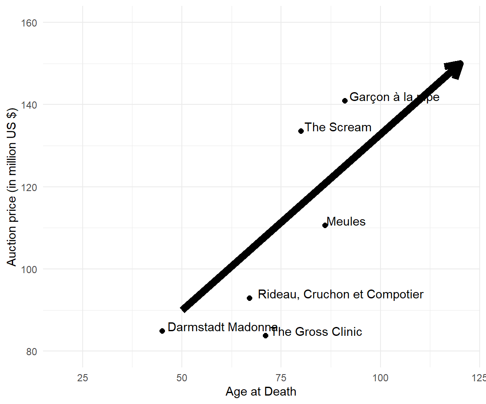
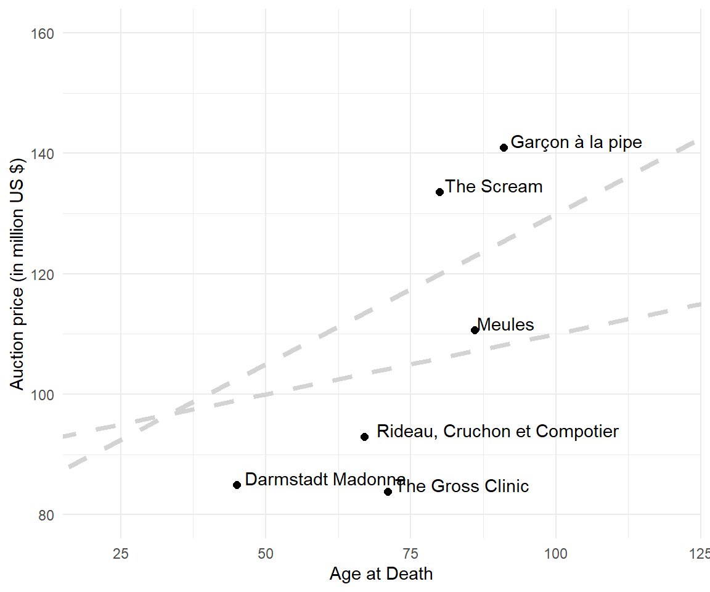
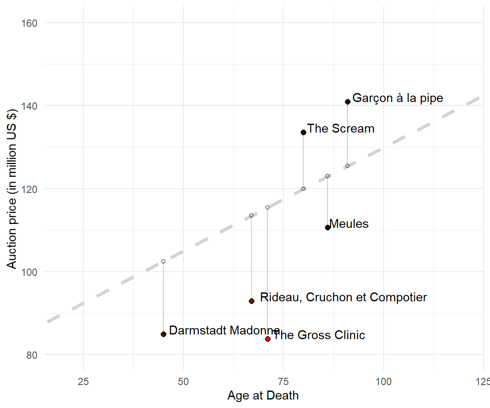
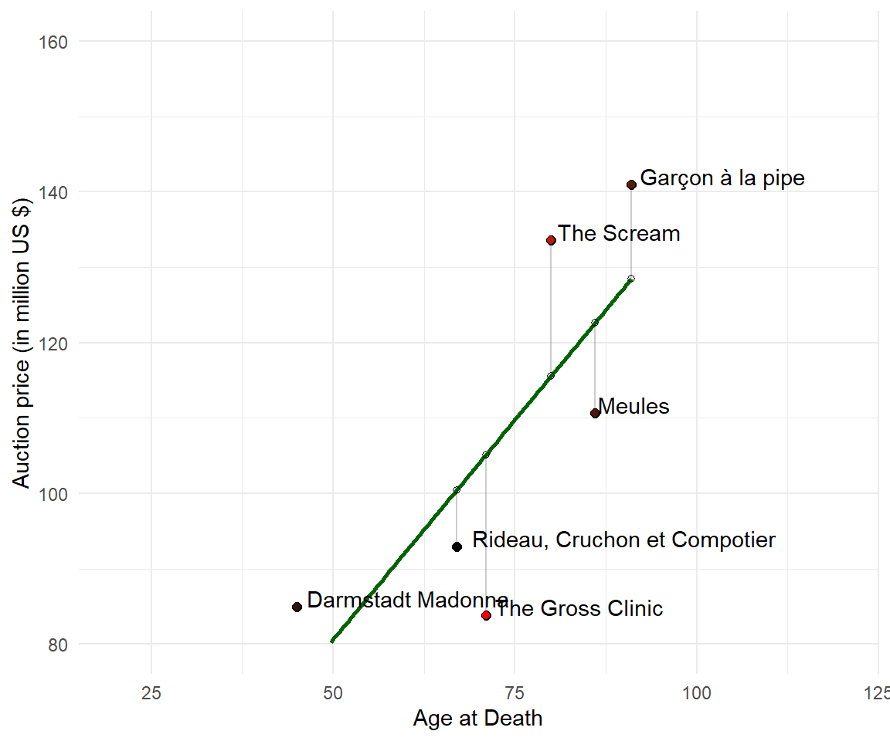
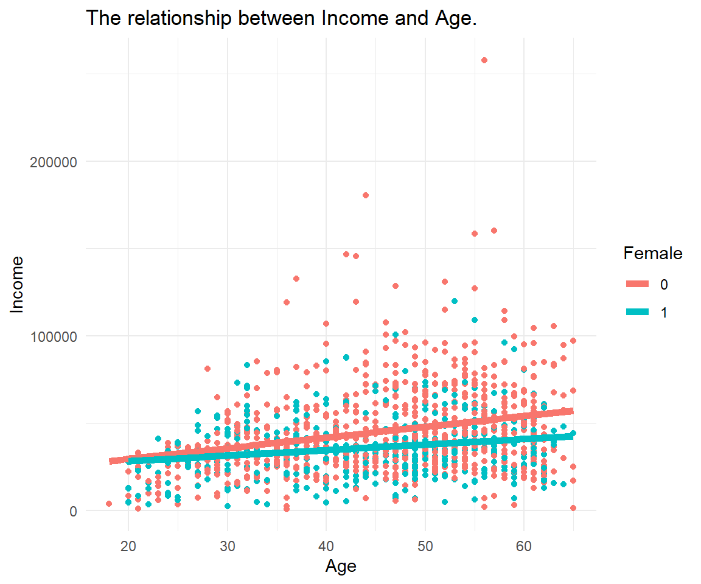
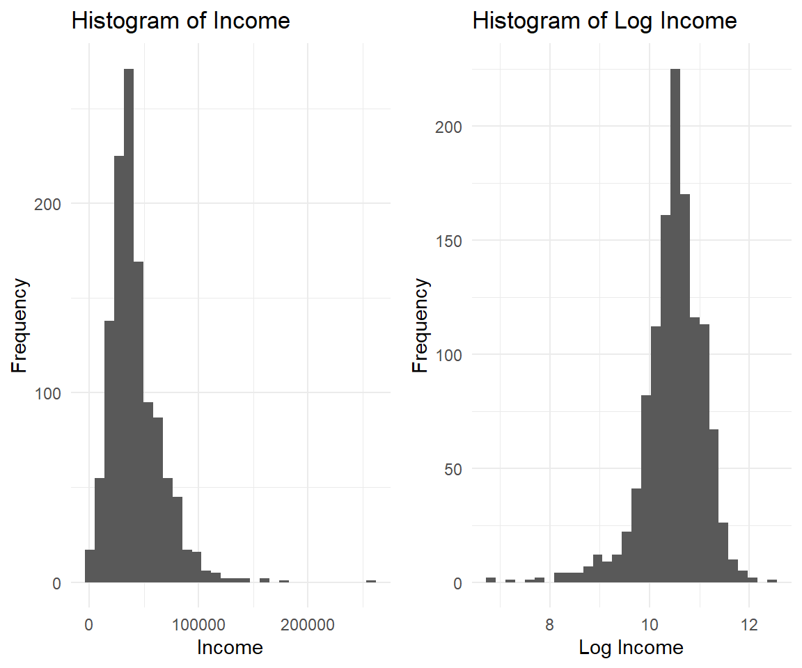
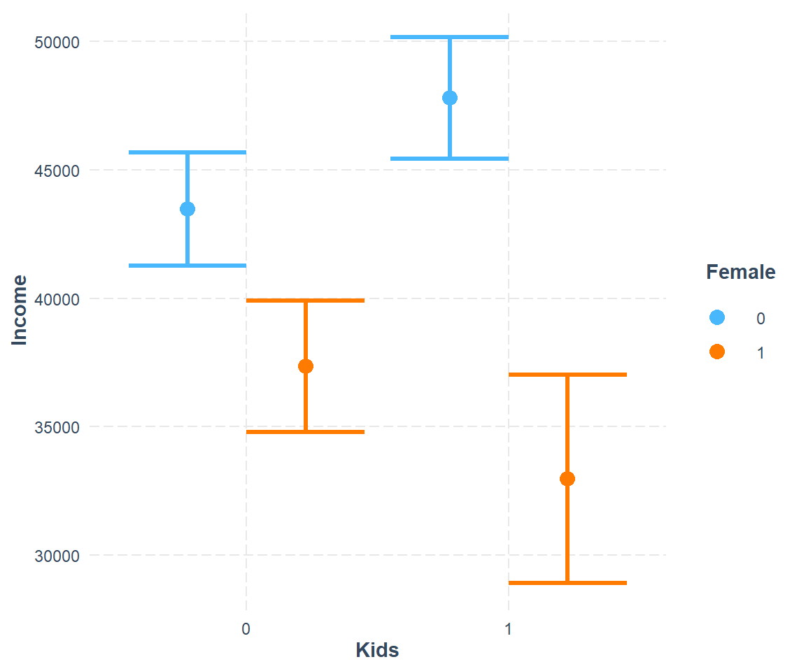
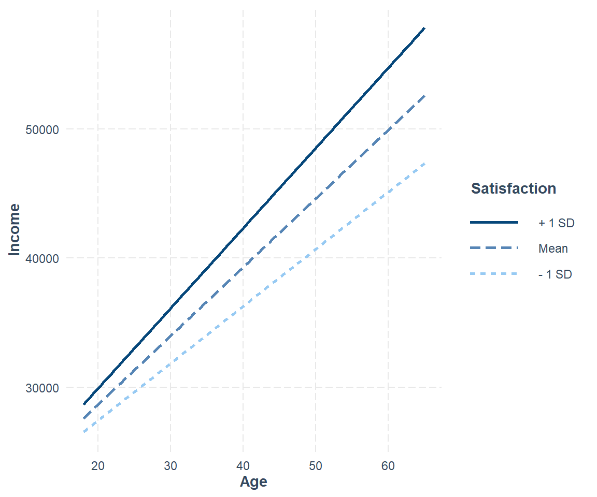

Chapter 12 Model
Relationships, outcomes, and predictions
12.1 Regression
Tests as statistical models
![horse]()
This chapter introduces the workhorse of empirical research in the social science: Regression.
“As an undergraduate I studied economics, which meant I studied a lot of regressions. It was basically 90% of the curriculum (when we’re not discussing supply and demand curves, of course). The effect of corruption on sumo wrestling? Regression. Effect of minimum wage changes on a Wendy’s in NJ? Regression. Or maybe The Zombie Lawyer Apocalypse is more your speed (O.K., not a regression, but the title was cool).”
12.1.1 Old but Gold
Are older artists are better than younger artists? While experience and maturity can certainly contribute to an artist's skill and creativity, there are many factors that can influence the quality of an artist's work, such as natural talent, dedication, training, and access to resources. Is there an optimum age for artistic performance as compared to athletic performances which reaches a peak in youth? Do artists improve their skills and performance over an entire lifetime step-by-step such that the longer you live, the more you have time to practice? Does exceptional art happens randomly? Perhaps it takes time to become more well-known. You need time to travel and show or sell your art in different places. Thus when you produce "more art" you increase the chance to be discovered by the public or a patron? Have you ever heard of an artist who exactly created one piece of art?
There seems to be something to the story.
"Paul Cezanne died in October 1906 at the age of 67. In time he would be generally regarded as the most influential painter who had worked in the nineteenth century (e.g., Clive Bell, 1982; Clement Greenberg, 1993). Art historians and critics would also agree that his greatest achievement was the work he did late in his life."
What does better mean? In this chapter the research question is:
Definition
A research question is
- focused on a single issue,
- specific enough to answer thoroughly
- and feasible to answer within the given time frame or practical constraints
- not to mention relevant to your field of study.
But what exactly is productivity and how can we measure it? To keep things simple we follow the literature and measure productivity via auction prices for paintings. That's a very economic perspective on art.
Definition
Operationalization is the process of defining the measurement of a phenomenon that is not directly measurable.
This is what we gonna explore:
12.1.2 Data is everywhere
Researchers use auction price data for which they have to pay. We use free information from a Wikipedia List of most expensive paintings of all time. The auction prices are inflation-adjusted by consumer price index in millions of United States dollars in 2019. That's another interesting economic procedure, that we take for given at this analysis.
12.1.2.1 Data in a table
The table is created with the DT package in datatable format. This exploits the full potential of html documents, i.e. the data is searchable and sortable. The first rows are displayed, but in principle it can include the entire dataset.
Definition
Tabular data is common in data analysis. You can create a table in Word or Excel.
12.1.2.2 Data in a graph
Two continuous variables are plotted in a scatterplot. The x-axis is called abscissa and the y-axis is called ordinate.

Note that the axis beginning is not zero. The decision where axes start was made by the ggplot package for this data. Remember, every unit on the y-axis represents a million US dollars. Do we need to show the age between 0 and 20? How many famous artists died before 20 and sold paintings for a hundred million US dollars?
When It’s OK to NOT Start Your Axis at Zero.
When the data really don’t fluctuate very much but a rise of small values like 1.4 or 1.4% is a big deal. With a graph that starts at zero, these changes can't be detected. The data scientist has to decide.
12.1.2.3 The trend
The graph suggests a positive trend between price and age. There is an increase in price for older artists. The older the artist, the higher the auction prices.

12.1.2.4 The blackbox
The mission is to find a mathematical function that describes the trend. In other words, we are looking for the black box that transforms the input into the output:
Definition
A mathematical function is an expression, rule, or law that defines a relationship between one variable (the independent variable, on the x-axis) and another variable (the dependent variable, on the y-axis).
From looking at the graph, here are two suggestions:
\[\begin{align} \text{price} = 80 + 0.5 \cdot \text{age} \tag{Suggestion 1} \\ \text{price} = 90 + 0.2 \cdot \text{age} \tag{Suggestion 2} \\ \end{align}\]
Definition
A linear function is defined by two components, intercept (with the y-axis) and slope.

How can we compare the two suggested lines? Which linear function represents the relationship best?
12.1.2.5 Nobody's perfect
We all make mistakes. So do the linear functions:
\[ \begin{align} \text{price} &= 80 + 0.5 \cdot \text{age} \tag{Suggestion 1} \\ 102.5 &= 80 + 0.5 \cdot 45 \tag{Age for Holbein} \\ \end{align}\]
The equation tells (or predicts) that for any artist at the age of 45 it expects a auction price for a painting of 102.5 million US Dollar. Darmstadt Madonna was sold for 85 million US dollar. The linear function overestimated the true value. When you look at the graph, you see some predictions are more accurate (close to the true values) than others. All are either above or below the line.
Definition
A residual (or error) is the vertical distance between the actual and the predicted value.

12.1.2.6 Vocab Wrap-Up
Let's wrap up regression vocab! Find an equation that describes the phenomenon of interest. Equation I shows a generic statistical model; equation II a generic linear model.
\[ \begin{align} \text{outcome} &= f(\text{explanatory}) + \text{noise} \tag{I} \\ \text{outcome} &= \text{intercept} + \text{slope} \cdot \text{explanatory} + \text{noise} \tag{II} \\ \end{align} \]
A regression model is suggested by the researcher. A more concrete regression model looks like this:
\[Y = \beta_1 + \beta_2 X + \epsilon\]
A model can be easy or complicated. It definitely contains variables and parameters.
- Variables: Things that we measure (or have data).
- Parameters: Constant values we believe to represent some fundamental truth about the relationship between the variables.
The calculation is called an estimation. In textbooks the same equation can be found with hats:
\[ \widehat{Y} = \widehat{\beta}_1 + \widehat{\beta}_2 \cdot X \] \(\widehat{Y}\) are called the fitted or predicted values. \(\widehat{\beta}\) are regression coefficients (this is the estimate of the unknown population parameter). As we have seen in the graph before, the differences between the actual and the predicted values are the residuals \(e = Y - \widehat{Y}\).
The fitting procedure is called ordinary least squares (OLS).
12.1.3 For the truly dedicated
The overall goal is to make as little as possible mistakes! What kind of mistake? The deviation from the observed values! What could come to your mind is to minimize the sum of all errors:
\[\sum e \rightarrow \min\] But wait, there is more. Is it fair to say that the sum should be small? Compare The Scream and Meules, their deviations are \(+17.5\) and \(-13.6\) (very similar). So taken these two together, there's almost not mistake! That is to say, positive and negative deviations cancel each other out. Thus we need one more twist in the story:
\[\sum e^2 \rightarrow \min\] The goal of OLS is to minimize the residual sum of squares or the sum of squared residuals.
12.1.3.1 Algebra
Amazing Fact
Algebra comes from Arabic, meaning "reunion of broken parts".
Let's introduce matrix notation. We began with \(X\) and \(Y\) being variables in the equation:
\[Y = \beta_0 + \beta_1 X + \epsilon \]
We turn this into:
\[y = X \beta + \epsilon \] Capital letters like \(X\) represent a matrix (a table with rows and column), and small letters like \(y\) and \(e\) represent vectors. Since there are 6 observations and two parameters in our model we get:
\[ \begin{align} \begin{pmatrix} Y_1 \\ Y_2 \\ Y_3 \\ Y_5 \\ Y_6 \end{pmatrix} &= \begin{pmatrix} 1 & X_{11} \\ 1 & X_{12} \\ 1 & X_{13} \\ 1 & X_{14} \\ 1 & X_{15} \\ 1 & X_{16} \end{pmatrix} \begin{pmatrix} \beta_1 \\ \beta_2 \end{pmatrix} + \begin{pmatrix} \epsilon_1 \\ \epsilon_2 \\ \epsilon_3 \\ \epsilon_4 \\ \epsilon_5 \\ \epsilon_6 \\ \end{pmatrix} \end{align}\]
Let's turn to the goal, minizing the residual sum of squares (RSS). By convention, the normal version of a vector is a vertical list of numbers in big parentheses (i.e. a column vector). To transpose a vector means change between the row and column format. Squaring a vector thus means the row version of the vector times the column version of the vector:
\[\sum e^2 = e^T \cdot e \rightarrow \min\] Notice that the sum operator is gone. Matrix multiplication requires multiplying all elements pairwise with each other and summing them up. Plug in the residuals \(e = y - X \beta\) in the equation:
\[\begin{align} \sum e^2 &= e^T \cdot e \\ &= (y - X \beta )^T (y - X \beta) \tag{$(A+B)^T = A^T + B^T$}\\ &= (y^T - X^T \beta^T) (y - X \beta) \\ &= y^T y - y^T X \beta - X^T \beta^T y + X^T \beta^T X \beta \\ &= y^2 \underbrace{- 2 \beta^T X^T y}_{??} + \beta^2 X^2 \\ \end{align}\]
Did you notice what happened in the middle? The transpose of the first term is equal to the second:
\[\begin{align} (y^T X \beta)^T = y X^T \beta^T \end{align}\]
12.1.3.2 Analysis
Amazing Fact
From Medieval Latin, analysis means "resolution of anything complex into simple elements" (opposite of synthesis).
Next, we are ready to optimize. Optimization (in math and economics) is done by differentiation:
\[\begin{align} \frac{\partial RSS}{\partial \beta} &= -2 X^T y + 2 \beta X^T X = 0 \tag{first derivative = zero} \\ 2 \beta X^T X &= 2 X^T y \tag{rearrange terms}\\ \beta X^T X &= X^T y \tag{the "normal equation"} \\ \beta &= (X^T X)^{-1} X^T y \tag{Bam}\\ \end{align}\]
Those \(\beta\) coefficients are the first and most important regression results. Retrieve them step by step to enhance your understanding of the math and coding as the same time.
12.1.3.3 Take the Long Way Home
First, retrieve matrix \(X\) from the data set:
Second, the transpose of \(X\) has two rows and six columns (use t()):
Next, calculate the square of the matrix (transpose times original):
The inverse of the matrix product can be calculated by solve():
Next, multiply the inverse with the transpose from the right:
solve(t(X)%*%X) %*% t(X)
#> [,1] [,2] [,3] [,4] [,5]
#> [1,] -0.78222656 -0.513671875 0.506835938 1.68847656 -0.191406250
#> [2,] 0.01293945 0.009277344 -0.004638672 -0.02075195 0.004882813
#> [,6]
#> [1,] 0.291992188
#> [2,] -0.001708984Finally, multiply the vector \(y\):
It's the \(\beta\) vector! The first entry is the intercept and the second is the slope of the linear function. The following graph shows the line created from intercept and slope in a scatter plot.
12.1.4 Survival of the Fittest Line
The linear equation that best describes the data is this:
\[Price = 22.3452 + 1.1657 \cdot Age\]

12.1.5 On the Shoulders of Giants
Fortunately, we are standing on the shoulders of giants. Clever people implemented the linear regression (command lm()) and all kinds of regressions and statistical tests in R.
lm(Price ~ Age.at.Death, data = artists)
#>
#> Call:
#> lm(formula = Price ~ Age.at.Death, data = artists)
#>
#> Coefficients:
#> (Intercept) Age.at.Death
#> 22.345 1.166The workhorse packs up work.
12.2 Linear Models
Simple and multiple linear regression
12.2.1 What You Deserve Is What You Get
Do you believe that people get what they deserve? The statement "what you deserve is what you get" is a controversial one. It can be interpreted such that individuals are entirely responsible for their own outcomes and that they receive exactly what they deserve based on their efforts, abilities, and choices. This view assumes a meritocratic (performance-oriented) system where everyone has an equal opportunity to succeed based on their merit, and rewards are distributed accordingly.
We investigate annual income and how it is determined. The famous Mincer Equation is single-equation model that explains wage income as a function of schooling and experience. The equation suggests that higher levels of education and experience are positively associated with earnings, and the coefficients can be estimated using statistical methods to quantify the magnitude of these relationships. When everybody has access to schooling and the equal opportunities on the labor market, better school outcomes and work experience may be determined by people efforts, abilities, and choices.
12.2.2 Data & Sample
We use SOEP practice data to analyse yearly income. The analysis is restricted to people who are fulltime employed (Emp == 1) in the working age (Age <= 65) who report an annual income from main job of more than one Euro (Income > 1). We analyse the most recent cross-section of the data (syear == 2019). We drop a few cases with missing information, thus conduct a complete case analysis.
library(haven)
master <- read_dta("https://github.com/MarcoKuehne/marcokuehne.github.io/blob/main/data/SOEP/practice_en/practice_dataset_eng.dta?raw=true")
# The data comes with Stata labels that do not work with all tidyverse commands
library(sjlabelled)
soep <- remove_all_labels(master)
# Rename German to English variable names
library(tidyverse)
soep <- soep %>%
rename("Age" = "alter",
"Income" = "einkommenj1",
"NACE2" = "branche",
"Persons in HH" = "anz_pers",
"Kids" = "anz_kind",
"Education" = "bildung",
"Health" = "gesund_org",
"Satisfaction" = "lebensz_org",
"Emp" = "erwerb")
# Explicitly define the gender variable as a factor
soep <- soep %>% mutate(Female = factor(sex))
# Round annual income to two digits
soep <- soep %>% mutate(Income = round(Income, 2))
# Build the estimation sample based on the topic
soep <- soep %>%
filter(Emp == 1) %>%
filter(Age <= 65) %>%
filter(Income > 1) %>%
filter(syear == 2019)
# Conduct a complete case analysis
soep <- soep %>% filter(complete.cases(.))The estimation sample looks like this:
The descriptive statistics of the sample look like this:
| Unique | Missing Pct. | Mean | SD | Min | Median | Max | Histogram | |
|---|---|---|---|---|---|---|---|---|
| sex | 2 | 0 | 0.4 | 0.5 | 0.0 | 0.0 | 1.0 | ![](data:image/png;base64, iVBORw0KGgoAAAANSUhEUgAABLAAAAGQCAMAAACJa2lsAAAABlBMVEUAAAD///+l2Z/dAAAG8klEQVR4nO3UsXEDAQwDwVf/TTtGZgeyjprdCsgA97wAjng+fQDAbwkWcIZgAWcIFnCGYAFnCBZwhmABZwgWcIZgAWcIFnCGYAFnCBZwhmABZ/wpWM8/e9fTwE2CBZwhWMAZggWcIVjAGYIFnCFYwBmCBZwhWMAZggWcIVjAGYIFnCFYwBmCBZwhWMAZggWcIVjAGYIFnCFYwBmCBZwhWMAZggWcIVjAGYIFnCFYwBmCBZwhWMAZggWcIVjAGYIFnCFYwBmCBZwhWMAZggWcIVjAGYIFnCFYwBmCBZwhWMAZggWcIVjAGYIFnCFYwBmCBZwhWMAZggWcIVjAGYIFnCFYwBmCBZwhWMAZggWcIVjAGYIFnCFYwBmCBZwhWMAZggWcIVjAGYIFnCFYwBmCBZwhWMAZggWcIVjAGYIFnCFYwBmCBZwhWMAZggWcIVjAGYIFnCFYwBmCBZwhWMAZggWcIVjAGYIFnCFYwBmCBZwhWMAZggWcIVjAGYIFnCFYwBmCBZwhWMAZggWcIVjAGYIFnCFYwBmCBZwhWMAZggWcIVjAGYIFnCFYwBmCBZwhWMAZggWcIVjAGYIFnCFYwBmCBZwhWMAZggWcIVjAGYIFnCFYwBmCBZwhWMAZggWcIVjAGYIFnCFYwBmCBZwhWMAZggWcIVjAGYIFnCFYwBmCBZwhWMAZggWcIVjAGYIFnCFYwBmCBZwhWMAZggWcIVjAGYIFnCFYwBmCBZwhWMAZggWcIVjAGYIFnCFYwBmCBZwhWMAZggWcIVjAGYIFnCFYwBmCBZwhWMAZggWcIVjAGYIFnCFYwBmCBZwhWMAZggWcIVjAGYIFnCFYwBmCBZwhWMAZggWcIVjAGYIFnCFYwBmCBZwhWMAZggWM8s4FCxjlnQsWMMo7FyxglHcuWMAo71ywgFHeuWABo7xzwQJGeeeCBYzyzgULGOWdCxYwyjsXLGCUdy5YwCjvXLCAUd65YAGjvHPBAkZ554IFjPLOBQsY5Z0LFjDKOxcsYJR3LljAKO9csIBR3rlgAaO8c8ECRnnnggWM8s4FCxjlnQsWMMo7FyxglHcuWMAo71ywgFHeuWABo7xzwQJGeeeCBYzyzgULGOWdCxYwyjsXLGCUdy5YwCjvXLCAUd65YAGjvHPBAkZ554IFjPLOBQsY5Z0LFjDKOxcsYJR3LljAKO9csIBR3rlgAaO8c8ECRnnnggWM8s4FCxjlnQsWMMo7FyxglHcuWMAo71ywgFHeuWABo7xzwQJGeeeCBYzyzgULGOWdCxYwyjsXLGCUdy5YwCjvXLCAUd65YAGjvHPBAkZ554IFjPLOBQsY5Z0LFjDKOxcsYJR3LljAKO9csIBR3rlgAaO8c8ECRnnnggWM8s4FCxjlnQsWMMo7FyxglHcuWMAo71ywgFHeuWABo7xzwQJGeeeCBYzyzgULGOWdCxYwyjsXLGCUdy5YwCjvXLCAUd65YAGjvHPBAkZ554IFjPLOBQsY5Z0LFjDKOxcsYJR3LljAKO9csIBR3rlgAaO8c8ECRnnnggWM8s4FCxjlnQsWMMo7FyxglHcuWMAo71ywgFHeuWABo7xzwQJGeeeCBYzyzgULGOWdCxYwyjsXLGCUdy5YwCjvXLCAUd65YAGjvHPBAkZ554IFjPLOBQsY5Z0LFjDKOxcsYJR3LljAKO9csIBR3rlgAaO8c8ECRnnnggWM8s4FCxjlnQsWMMo7FyxglHcuWMAo71ywgFHeuWABo7xzwQJGeeeCBYzyzgULGOWdCxYwyjsXLGCUdy5YwCjvXLCAUd65YAGjvHPBAkZ554IFjPLOBQsY5Z0LFjDKOxcsYJR3LljAKO9csIBR3rlgAaO8c8ECRnnnggWM8s4FCxjlnQsWMMo7FyxglHcuWMAo71ywgFHeuWABo7xzwQJGeeeCBYzyzgULGOWdCxYwyjsXLGCUdy5YwCjvXLCAUd65YAGjvHPBAkZ554IFjPLOBQsY5Z0LFjDKOxcsYJR3LljAKO9csIBR3rlgAaO8c8ECRnnnggWM8s4FCxjlnQsWMMo7FyxglHcuWMAo71ywgFHeuWABo7xzwQJGeeeCBYzyzgULGOWdCxYwyjsXLGCUdy5YwCjvXLCAUd65YAGjvHPBAkZ554IFjPLOBQsY5Z0LFjDKOxcsYJR3LljAKO9csIBR3rlgAaO8c8ECRnnnggWM8s4FCxjlnQsWMMo7FyxglHcuWMAo71ywgFHeuWABo7xzwQJGeeeCBYzyzgULGOWdCxYwyjsXLGCUdy5YwCjvXLCAUd55OljA93tbsAA+SbCAMwQLOEOwgDMECzhDsIAzBAs4Q7CAMwQLOEOwgDMECzhDsIAzBAs4Q7CAM34ACd9SkxOaeBAAAAAASUVORK5CYII=) |
| Age | 47 | 0 | 45.4 | 11.2 | 18.0 | 47.0 | 65.0 | ![](data:image/png;base64, iVBORw0KGgoAAAANSUhEUgAABLAAAAGQCAMAAACJa2lsAAAABlBMVEUAAAD///+l2Z/dAAAOT0lEQVR4nO3UgZHsOg4DwHf5J30RWH9ZIxqU3B0BDQv49z+AQ/xLHwDwVwYLOIbBAo5hsIBjGCzgGAYLOIbBAo5hsIBjGCzgGAYLOIbBAo5hsIBjGCzgGAYLyv69LP29c4gCygxWiiigzGCliALKDFaKKKDMYKWIAsoMVooooMxgpYgCygxWiiigzGCliALKDFaKKKDMYKWIAsoMVooooMxgpYgCygxWiiigzGCliALKDFaKKKDMYKWIAsoMVooooMxgpYgCygxWiiigzGCliALKDFaKKKDMYKWIAsoMVooooMxgpYgCygxWiiigzGCliALKDFaKKKDMYKWIAsoMVooooMxgpYgCygxWiiigzGCliALKDFaKKKDMYKWIAsoMVooooMxgpYgCygxWiiigzGCliALKDFaKKKDMYKWIAsoMVooooMxgpYgCygxWiiigzGCliALKDFaKKKDMYKWIAsoMVooooMxgpYgCygxWiiigzGCliALKDFaKKKDMYKWIAsoMVooooMxgpYgCygxWiiigzGCliALKDFaKKKDMYKWIAsoMVooooMxgpYgCygxWiiigzGCliALKDFaKKKDMYKWIAsoMVooooMxgpYgCygxWiii4wdsL8rJ0vHOIghukF6VZOt45RMEN0ovSLB3vHKLgBulFaZaOdw5RcIP0ojRLxzuHKLhBelGapeOdQxTcIL0ozdLxziEKbpBelGbpeOcQBTdIL0qzdLxziIIbpBelWTreOUTBDdKL0iwd7xyi4AbpRWmWjncOUXCD9KI0S8c7hyi4QXpRmqXjnUMU3CC9KM3S8c4hCm6QXpRm6XjnEAU3SC9Ks3S8c4iCG6QXpVk63jlEwQ3Si9IsHe8couAG6UVplo53DlFwg/SiNEvHO4couEF6UZql451DFNwgvSjN0vHOIQpukF6UZul45xAFN0gvSrN0vHOIghukF6VZOt45RMEN0ovSLB3vHKLgBulFaZaOdw5RcIP0ojRLxzuHKLhBelGapeOdQxTcIL0ozdLxziEKbpBelGbpeOcQBTdIL0qzdLxziIIbpBelWTreOUTBDdKL0iwd7xyi4AbpRWmWjncOUXCD9KLcJf03FybfBn+Vrvhd0n9zYfJt8Ffpit8l/TcXJt8Gf5Wu+F3Sf3Nh8m3wV+mK3yX9Nxcm3wZ/la74XdJ/c2HybfBX6YrfJf03FybfBn+Vrvhd0n9zYfJt8Ffpit8l/TcXJt8Gf5Wu+F3Sf3Nh8m3wV+mK3yX9Nxcm3wZ/la74XdJ/c2HybfBX6YrfJf03FybfBn+Vrvhd0n9zYfJt8Ffpit8l/TcXJt8Gf5Wu+F3Sf3Nh8m3wV+mK3yX9Nxcm3wZ/la74XdJ/c2HybfBX6YrfJf03FybfBn+Vrvhd0n9zYfJt8Ffpit8l/TcXJt8Gf5Wu+F3Sf3Nh8m3wV+mK3yX9Nxcm38a50pXjF+nXszD5Ns6Vrhy/SL+ehcm3ca505fhF+vUsTL6Nc6Urxy/Sr2dh8m2cK105fpF+PQuTb+Nc6crxi/TrWZh8G+dKV45fpF/PwuTbOFe6cvwi/XoWJt/GudKV4xfp17Mw+TbOla4cv0i/noXJt3GudOX4Rfr1LEy+jXOlK8cv0q9nYfJtnCtdOX6Rfj0Lk2/jXOnK8Yv061mYfBvnSleOX6Rfz8Lk2zhXunL8Iv16FibfxrnSleMX6dezMPk2zpWuHL9Iv56FybdxrnTl+EX69SxMvo1zpSvHL9KvZ2HybZwrXTl+kX49C5Nv41zpyvGL9OtZmHwb50pXjl+kX8/C5Ns4V7py/CL9ehYm38a50pXjF+nXszD5Ns6Vrhy/SL+ehcm3ca505fhF+vUsTL6Nc6Urxy/Sr2dh8m2cK105fpF+PQuTb+Nc6crxi/TrWZh8G+dKV45fpF/PwuTb2CjdAQ6SfqwLk29jo3QHOEj6sS5Mvo2N0h3gIOnHujD5NjZKd4CDpB/rwuTb2CjdAQ6SfqwLk29jo3QHOEj6sS5Mvo2N0h3gIOnHujD5NjZKd4CDpB/rwuTb2CjdAQ6SfqwLk29jo3QHOEj6sS5Mvo2N0h3gIOnHujD5NjZKd4CDpB/rwuTb2CjdAQ6SfqwLk29jo3QHOEj6sS5Mvu1u6UcJT9LdWJh8293SjxKepLuxMPm2u6UfJTxJd2Nh8m13Sz9KeJLuxsLk2+6WfpTwJN2Nhcm33S39KOFJuhsLk2+7W/pRwpN0NxYm33a39KOEJ+luLEy+7W7pRwlP0t1YmHzb3dKPEp6ku7Ew+ba7pR8lPEl3Y2HybXdLP0p4ku7GwuTb7pZ+lPAk3Y2FybfdLf0o4Um6GwuTb7tb+lHCk3Q3Fibfdrf0o4Qn6W4sTL7tbulHCU/S3ViYfNvd0o8SnqS7sTD5trulHyU8SXdjYfJtd0s/SniS7sbC5Nvuln6U8CTdjYXJt90t/SjhSbobC5Nvu1v6UcKTdDcWJt92t/SjhCfpbixMvu1u6UcJT9LdWJh8293SjxKepLuxMPm2u6UfJTxJd2Nh8m13Sz9KeJLuxsLk2+6WfpTwJN2Nhcm33S39KOFJuhsLk2+7W/pRwpN0NxYm33a39KOEJ+luLEy+7W7pRwlP0t1YmHzb3dKPEp6ku7Ew+ba7pR8lPEl3Y2HybXdLP0p4ku7GwuTb7pZ+lPAk3Y2FybfdLf0o4Um6GwuTb7tb+lHCk3Q3Fibfdrf0o4Qn6W4sTL7tbulHCU/S3ViYfNvd0o8SnqS7sTD5trulHyU8SXdjYfJtd0s/SniS7sbC5Nvuln6U8CTdjYXJt90t/SjhSbobC5Nvu1v6UcKTdDcWJt92t/SjhCfpbixMvu1u6UcJT9LdWJh8293SjxKGKNWmq4/8h/QrgSFKtenqI/8h/UpgiFJtuvp4nvRvg28qtbSr/udJ/zb4plJLu+p/nvRvg28qtbSr/udJ/zb4plJLu+p/nvRvg28qtbSr/udJ/zb4plJLu+p/nvRvg28qtbSr/udJ/zb4plJLu+p/nvRvg28qtbSr/udJ/zb4plJLu+p/nvRvg28qtbSr/udJ/zb4plJLu+p/nvRvg28qtbSr/udJ/zb4plJLu+p/nvRvg28qtbSr/udJ/zb4plJLu+p/nvRvg28qtbSr/udJ/zb4plJLu+p/nvRvg28qtbSr/udJ/zb4plJLu+p/nvRvg28qtbSr/udJ/zb4plJLu+p/nvRvg28qtbSr/udJ/zb4plJLu+p/nvRvg28qtbSr/udJ/zb4plJLu+p/nvRvg28qtbSr/udJ/zb4plJLu+p/nvRvg28qtbSr/udJ/zb4plJLu+p/nvRvg28qtbSr/udJ/zb4plJLu+p/nvRvg28qtbSr/udJ/zb4plJLu+p/nvRvg28qtbSr/udJ/zb4plJLu+p/nvRvg28qtbSr/udJ/zb4plJLu+p/nvRvg28qtbSr/udJ/zb4plJLu+p/nvRvg28qtbSr/udJ/zb4plJLu+p/nvRvg28qtbSr/udJ/zb4plJLu+p/nvRvg28qtbSr/udJ/zb4plJLu+p/nvRvg28qtbSr/udJ/zb4plJLu+p/nvRvg28qtbSr/udJ/zb4plJLu+p/nvRvg28qtbSr/udJ/zb4plJLu+p/nvRvg28qtbSr/udJ/zb4plJLu+p/nvRvg28qtbSr/udJ/zb4plJLu+p/nvRvg28qtbSr/udJ/zb4plJLu+p/nvRvg28qtbSr/hukcwReUBqFrrXZIJ0j8ILSKHStzQbpHIEXlEaha202SOcIvKA0Cl1rs0E6R+AFpVHoWpsN0jkCLyiNQtfabJDOEXhBaRS61maDdI7AC0qj0LU2G6RzBF5QGoWutdkgnSPwgtIodK3NBukcgReURqFrbTZI5wi8oDQKXWuzQTpH4AWlUehamw3SOQIvKI1C19pskM4ReEFpFLrWZoN0jsALSqPQtTYbpHMEXlAaha612SCdI/CC0ih0rc0G6RyBF5RGoWttNkjnCLygNApda7NBOkfgBaVR6FqbDdI5Ai8ojULX2myQzhF4QWkUutZmg3SOwAtKo9C1NhukcwReUBqFrrXZIJ0j8ILSKHStzQbpHIEXlEaha202SOcIvKA0Cl1rs0E6R+AFpVHoWpsN0jkCLyiNQtfabJDOEXhBaRS61maDdI7AC0qj0LU2G6RzBF5QGoWutdkgnSPwgtIodK3NBukcgReURqFrbTZI5wi8oDQKXWuzQTpH4AWlUehamw3SOQIvKI1C19pskM4ReEFpFLrWZoN0jsALSqPQtTYbpHMEXlAaha612SCdI/CC0ih0rc0G6RyBF5RGoWttNkjnCLygNApda7NBOkfgBaVR6FqbDdI5Ai8ojULX2myQzhF4QWkUutZmg3SOwAtKo9C1NhukcwReUBqFrrXZIJ0j8ILSKHStzQbpHIEXlEaha202SOcIvKA0Cl1rs0E6R+AFpVHoWpsN0jkCLyiNQtfabJDOEXhBaRS61maDdI7AC0qj0LU2G6RzBF5QGoWutdkgnSPwgtIodK3NBukcgReURqFrbTZI5wi8oDQKXWuzQTpH4AWlUehamw3SOQIvKI1C19pskM4ReEFpFLrWZoN0jsALSqPQtTYbpHMEXlAaha612SCdI/CC0ih0rc0G6RyBF5RGoWttNkjnCLygNApda7NBOkfgBaVR6FqbDdI5Ai8ojULX2myQzhF4QWkUutZmg3SOwAtKo9C1NhukcwReUBoFCwIkGSzgGAYLOIbBAo5hsIBjGCzgGAYLOIbBAo5hsIBjGCzgGAYLOIbBAo5hsIBjGCzgGAYLOIbBAo7RNlgASQYLOIbBAo5hsIBjGCzgGAYLOIbBAo5hsIBjGCzgGAYLOIbBAo5hsIBjGCzgGAYLOMb/ATbv6oymfW5MAAAAAElFTkSuQmCC) |
| Persons in HH | 10 | 0 | 2.9 | 1.4 | 1.0 | 3.0 | 10.0 | ![](data:image/png;base64, iVBORw0KGgoAAAANSUhEUgAABLAAAAGQCAMAAACJa2lsAAAABlBMVEUAAAD///+l2Z/dAAAHUklEQVR4nO3UwY0gRxIEwaX+SvN9jwZ2CheYdMJMgkZFtv/5ByDiz29/AMDfEiwgQ7CADMECMgQLyBAsIEOwgAzBAjIEC8gQLCBDsIAMwQIyBAvI+FGw/vyi1QMAHYIFZAgWkCFYQIZgARmCBWQIFpAhWECGYAEZggVkCBaQIVhAhmABGYIFZAgWkCFYQIZgARmCBWQIFpAhWECGYAEZggVkCBaQIVhAhmABGYIFZAgWkCFYQIZgARmCBWQIFpAhWECGYAEZggVkCBaQIVhAhmABGYIFZAgWkCFYQIZgARmCBWQIFpAhWECGYAEZggVkCBaQIVhAhmABGYIFZAgWkCFYQIZgARmCBWQIFpAhWECGYAEZggVkCBaQIVhAhmABGYIFZAgWkCFYQIZgARmCBWQIFpAhWECGYAEZggVkCBaQIVhAhmABGYIFZAgWkCFYQIZgARmCBWQIFpAhWECGYAEZggVkCBaQIVhAhmABGYIFZAgWkCFYQIZgARmCBWQIFpAhWECGYAEZggVkCBaQIVhAhmABGYIFZAgWkCFYQIZgARmCBWQIFpAhWECGYAEZggVkCBaQIVhAhmABGYIFZAgWkCFYQIZgARmCBWQIFpAhWECGYAEZggVkCBaQIVhAhmABGYIFZAgWkCFYQIZgARmCBWQIFpAhWECGYAEZggVkCBaQIVhAhmABGYIFZAgWkCFYQIZgARmCBWQIFpAhWECGYAEZggVkCBaQIVhAhmABGYIFZAgWkCFYQIZgARmCBWQIFpAhWECGYAEZggVkCBaQIVhAhmABGYIFZAgWkCFYQIZgARmCBWQIFpAhWECGYAEZggVkCBaQIVhAhmABGYIFZAgWkCFYQIZgARmCBWQIFpAhWECGYAEZggVkCBaQIVhAhmABGYIFZAgWkCFYQIZgARmCBWQIFpAhWECGYAEZggVkCBaQIVhAhmABGYIFZAgWkCFYQIZgARmCBWQIFpAhWECGYAEZggVkCBaQIVhAhmABGYIFZAgWkCFYQIZgARmCBWQIFpAhWECGYAEZggVkZIL1m1aPD/yMYP2F1eMDPyNYf2H1+MDPCNZfWD0+8DOC9RdWjw/8jGDdttodkgTrttXukCRYt612hyTBum21OyQJ1m2r3SFJsG5b7Q5JgnXbandIEqzbVrtDkmDdttodkgTrttXukCRYt612hyTBum21OyQJ1m2r3SFJsG5b7Q5JgnXbandIEqzbVrtDkmDdttodkgTrttXukCRYt612hyTBum21OyQJ1m2r3SFJsG5b7Q5JgnXbandIEqzbVrtDkmDdttodkgTrttXukCRYt612hyTBum21OyQJ1m2r3SFJsG5b7Q5JgnXbandIEqzbVrtDkmDdttodkgTrttXukCRYt612hyTBum21OyQJ1m2r3SFJsG5b7Q5JgnXbandIEqzbVrtDkmDdttodkgTrttXukCRYt612hyTBum21OyQJ1m2r3SFJsG5b7Q5JgnXbandIEqzbVrtDkmDdttodkgTrttXukCRYt612hyTBum21OyQJ1m2r3SFJsG5b7Q5JgnXbandIEqzbVrtDkmDdttodkgTrttXukCRYt612hyTBum21OyQJ1m2r3SFJsG5b7Q5JgnXbandIEqzbVrtDkmDdttodkgTrttXukCRYt612hyTBum21OyQJ1m2r3SFJsG5b7Q5JgnXbandIEqzbVrtDkmDdttodkgTrttXukCRYt612hyTBum21OyQJ1m2r3SFJsG5b7Q5JgnXbandIEqzbVrtDkmDdttodkgTrttXukCRYt612hyTBum21OyQJFl9WNwfPBIsvq5uDZ4LFl9XNwTPB4svq5uCZYPFldXPwTLD4sro5eCZYfFndHDwTLL6sbg6eCRZfVjcHzwSLL6ubg2eCxZfVzcEzweLL6ubgmWDxZXVz8Eyw+LK6OXgmWHxZ3Rw8Eyy+rG4OngkWX1Y3B88Eiy+rm4NngsWX1c3BM8Hiy+rm4Jlg8WV1c/BMsPiyujl4Jlh8Wd0cPBMsvqxuDp4JFl9WNwfPBIsvq5uDZ4LFl9XNwTPB4svq5uCZYPFldXPwTLD4sro5eCZYfFndHDwTLL6sbg6eCRZfVjcHzwSLL6ubg2eCxZfVzcEzweLL6ubgmWDxZXVz8Eyw+LK6OXgmWHxZ3Rw8Eyy+rG4OngkWX1Y3B88Eiy+rm4NngsWX1c3BM8Hiy+rm4Jlg8WV1c/BMsPiyujl4Jlh8Wd0cPBMsvqxuDp4JFl9WNwfPBIsvq5uDZ4LFl9XNwTPB4svq5uCZYHHQ6typEywOWp07dYLFQatzp06wOGh17tQJFgetzp06weKg1blTJ1gctDp36gSLg1bnTp1gcdDq3KkTLA5anTt1gsVBq3OnTrDgf6x+Nf4fBAuuWP3l/yGCBVes/vL/EMECfpVgARmCBWTMggXwmwQLyBAsIEOwgAzBAjIEC8gQLCBDsIAMwQIyBAvIECwgQ7CADMECMgQLyPgX+0zXRufXsYUAAAAASUVORK5CYII=) |
| Kids | 8 | 0 | 0.7 | 1.1 | 0.0 | 0.0 | 8.0 | ![](data:image/png;base64, iVBORw0KGgoAAAANSUhEUgAABLAAAAGQCAMAAACJa2lsAAAABlBMVEUAAAD///+l2Z/dAAAGJklEQVR4nO3UsXEcAQwEQSr/pOW/BVXdkTtUdwQLGPP1ByDi66cHAFwJFpAhWECGYAEZggVkCBaQIVhAhmABGYIFZAgWkCFYQIZgARmCBWT8U7C+HvHWKcBvJ1hAhmABGYIFZAgWkCFYQIZgARmCBWQIFpAhWECGYAEZggVkCBaQIVhAhmABGYIFZAgWkCFYQIZgARmCBWQIFpAhWECGYAEZggVkCBaQIVhAhmABGYIFZAgWkCFYQIZgARmCBWQIFpAhWECGYAEZggVkCBaQIVhAhmABGYIFZAgWkCFYQIZgARmCBWQIFpAhWECGYAEZggVkCBaQIVhAhmABGYIFZAgWkCFYQIZgARmCBWQIFpAhWECGYAEZggVkCBaQIVhAhmABGYIFZAgWkCFYQIZgARmCBWQIFpAhWECGYAEZggVkCBaQIVhAhmABGYIFZAgWkCFYQIZgARmCBWQIFpAhWECGYAEZggVkCBaQIVhAhmABGYIFZAgWkCFYQIZgARmCBWQIFpAhWECGYAEZggVkCBaQIVhAhmABGYIFZAgWkCFYQIZgARmCBWQIFpAhWECGYAEZggVkCBaQIVhAhmABGYIFZAgWkCFYQIZgARmCBWQIFpAhWECGYAEZggVkCBaQIVhAhmABGYIFZAgWkCFYQIZgARmCBWQIFpAhWECGYAEZggVkCBaQIVhAhmABGYIFZAgWkCFYQIZgARmCBWQIFpAhWECGYAEZggVkCBaQIVhAhmABGYIFZAgWkCFYQIZgARmCBWQIFpAhWECGYAEZggVkCBaQIVhAhmABGYIFZAgWkCFYQIZgARmCBWQIFpAhWECGYAEZggVkCBaQIVhAhmABGYIFZAgWkCFYQIZgARmCBWQIFpAhWECGYAEZggVkCBaQIVhAhmABGYIFZAgWkCFYQIZgARmCBWQIFpAhWECGYAEZggVkCBaQIVhAhmABGYIFZAgWkCFYQIZgARmCBWQIFpAhWECGYAEZggVkCBaQIVhAhmABGYIFZAgWkCFYQIZgARmCBWQIFpAhWECGYAEZggVkCBaQIVhAhmABGYIFZAgWkCFYQIZgARmCBWQIFpAhWECGYAEZggVkCBaQIVhAhmABGYIFZAgWkCFYQIZgARmCBWQIFpAhWECGYAEZggVkCBaQIVhAhmABGYIFZAgWkCFYQIZgARmCBWQIFpAhWECGYAEZggVkCBaQIVhAhmABGYIFZAgWkCFYQIZgARmCBWQIFpAhWECGYAEZggVk/ECwnvHWQ4BdggVkCBaQIVhAhmABGYIFZAgWkCFYQMZ/HayhKcCBYG1MAQ4Ea2MKcCBYG1OAA8HamAIcCNbGFOBAsDamAAeCtTEFOBCsjSnAgWBtTAEOBGtjCnAgWBtTgAPB2pgCHAjWxhTgQLA2pgAHgrUxBTgQrI0pwIFgbUwBDgRrYwpwIFgbU4ADwdqYAhwI1sYU4ECwNqYAB4K1MQU4EKyNKcCBYG1MAQ4Ea2MKcCBYG1OAA8HamAIcCNbGFOBAsDamAAeCtTEFOBCsjSnAgWBtTAEOBGtjCnAgWBtTgAPB2pgCHAjWxhTgQLA2pgAHgrUxBTgQrI0pwIFgbUwBDgRrYwpwIFgbU4ADwdqYAhwI1sYU4ECwNqYAB4K1MQU4EKyNKcCBYG1MAQ4Ea2MKcCBYG1OAA8HamAIcCNbGFOBAsDamAAeCtTEFOBCsjSnAgWBtTAEOBGtjCnAgWBtTgAPB2pgCHAjWxhTgQLA2pgAHgrUxBTgQrI0pwIFgbUwBDgRrYwpwIFgbU4ADwTIFMgTLFMgQLFMgQ7BMgQzBMgUyBMsUyBAsUyBDsEyBDMEyBTIEyxTIECxTIEOwTIEMwTIFMgTLFMgQLFMgQ7BMgQzBMgUyBMsUyBAsUyBDsEyBDMEyBTIEyxTIECxTIEOwTHllyhNL4JNgmfLKlCeWwCfBMuWVKU8sgU+CZcorU55YAp8Ey5RXpjyxBD4JlimvTHliyRJf2SBYprwy5YklpvBJsEx5ZcoTS0xZ9/1fyQYL+B1eCxbATxIsIEOwgAzBAjIEC8gQLCBDsIAMwQIyBAvIECwgQ7CADMECMgQLyBAsIOMv7bWkbXlhc9kAAAAASUVORK5CYII=) |
| Education | 16 | 0 | 12.9 | 2.8 | 7.0 | 12.0 | 18.0 | ![](data:image/png;base64, iVBORw0KGgoAAAANSUhEUgAABLAAAAGQCAMAAACJa2lsAAAABlBMVEUAAAD///+l2Z/dAAAPRUlEQVR4nO3U0bXlMAxC0Tv9Nz0faeDJywJknV1BhAm/fwAwxM/9AQDwVwwWgDEYLABjMFgAxmCwAIzBYAEYg8ECMAaDBWAMBgvAGAwWgDEYLABjMFgAxmCwAIzBYA33k3BfCXyo4nAMFjahisMxWNiEKg7HYGETqjgcg4VNqOJwDBY2oYrDMVjYhCoOx2BhE6o4HIOFTajicAwWNqGKwzFY2IQqDsdgYROqOByDhU2o4nAMFjahisMxWNiEKg7HYGETqjgcg4VNqOJwDBY2oYrDMVjYhCoOx2BhE6o4HIOFTajicAwWNqGKwzFY2IQqDsdgYROqOByDhU2o4nAMFjahisMxWNiEKg7HYGETqjgcg4VNqOJwDBY2oYrDMVjYhCoOx2BhE6o4HIOFTajicAwWNqGKwzFY2IQqDsdgYROqOByDhU2o4nAMFjahisMxWNiEKg7HYGETqjgcg4VNqOJwDBY2oYrDMVjYhCoOx2BhE6o4HIOFTajicAwWNqGKwzFY2IQqDsdgYROqOByDhU2o4nAMFjahisMxWNiEKg7HYGETqjgcg4VNqOJwDBY2oYrDMVjYhCoOx2BhE6o4HIOFTajicAwWNqGKwzFY2IQqDsdgYROqOByDhU2o4nAMFjahisMxWNiEKg7HYGETqjgcg4VNqOJwDBY2oYrDMVjYhCoOx2BhE6o4HIOFTajicAwWNqGKwzFY2IQqDsdgYROqOByDhU2o4nAMFjahisMxWNiEKg7HYGETqjgcg4VNqOJwDBY2oYrDMVjYhCoOx2BhE6o4HIOFTajicAwWNqGKwzFY2IQqDsdgYROqOByDhU2o4nAMFjahisMxWNiEKg7HYGETqjgcg4VNqOJwDBY2oYrDMVjYhCoOx2BhE6o4HIOFTajicAwWNqGKwzFY2IQqDsdgYROqOByDhU2o4nAMFjahisMxWNiEKg7HYGETqjgcg4VNqOJwDBY2oYrDMVjYhCoOx2BhE6o4HIOFTajicAwWNqGKwzFY2IQqDsdgYROqOByDhU2o4nAMFjahisMxWNiEKg7HYGETqjgcg4VNqOJwDBY2oYrDMVjYhCoOx2BhE6o4HIOFTajicAwWNqGKwzFY2IQqDsdgYROqOByDhU2o4nAMFjahisMxWNiEKg7HYGETqjgcg4VNqOJwDBY2oYrDMVjYhCoOx2BhE6o4HIOFTajicAwWNqGKwzFY2IQqDsdgYROqOByDhU2o4nAMFjahisMxWNiEKg7HYGETqjgcg4VNqOJwDBY2oYrDMVjYhCoOx2BhE6o4HIOFTajicAwWNqGKwzFY2IQqDsdgYROqOByDhU2o4nAMFjahisMxWNiEKg7HYGETqjgcg4VNqOJwDBY2oYrDMVjYhCoOx2BhE6rYR7MlEu4ogQ9V7ONemYvcUQIfqtjHvTIXuaMEPlSxj3tlLnJHCXyoYh/3ylzkjhL4UMU+7pW5yB0l8KGKfdwrc5E7SuBDFfu4V+Yid5TAhyr2ca/MRe4ogQ9V7ONemYvcUQIfqtjHvTIXuaMEPlSxj3tlLnJHCXyoYh/3ylzkjhL4UMU+7pW5yB0l8KGKfdwrc5E7SuBDFfu4V+Yid5TAhyr2ca/MRe4ogQ9V7ONemYvcUQIfqtjHvTIXuaMEPlSxj3tlLnJHCXyoYh/3ylzkjhL4UMU+7pW5yB0l8KGKfdwrc5E7SuBDFfu4V+Yid5TAhyr2ca/MRe4ogQ9V7ONemYvcUQIfqtjHvTIXuaMEPlSxj3tlLnJHCXyoYh/3ylzkjhL4UMU+7pW5yB0l8KGKfdwrc5E7SuBDFfu4V+Yid5TAhyr2ca/MRe4ogQ9V7ONemYvcUQIfqtjHvTIXuaMEPlSxj3tlLnJHCXyoYh/3ylzkjhL4UMU+7pW5yB0l8KGKfdwrc5E7SuBDFfu4V+Yid5TAhyr2ca/MRe4ogQ9V7ONemYvcUQIfqtjHvTIXuaOER167qGIfzWtLuKOER167qGIfzWtLuKOER167qGIfzWtLuKOER167qGIfzWtLuKOER167qGIfzWtLuKOER167qGIfzWtLuKOER167qGIfzWtLuKOER167qGIfzWtLuKOER167qGIfzWtLuKOER167qGIfzWtLuKOER167qGIfzWtLuKOER167qGIfzWtLuKOER167qGIfzWtLuKOER167qGIfzWtLuKOER167qGIfzWtLuKOER167qGIfzWtLuKOER167qGIfzWtLuKOER167qGIfzWtLuKOER167qGIfzWtLuKOER167qGIfzWtLuKOER167qGIfzWtLuKOER167qGIfzWtLuKOER167qGIfzWtLuKOER167qGIfzWtLuKOER167qGIfzWtLuKOER167qGIfzWtLuKOER167qGIfzWtLuKOER167qGIfzWtLuKOER167qGIfzWtLuKOER167qGIfzWtLuKOER167qGIfzWtLuKOER167qGIfzWtLuKOER167qGIfzWtLuKOER167qGIfzWtLuKOER167qGIfzWtLuKOER167qGIfzWtLuKOER167qGIfzWtLuKOER167qGIfzWtLuKOER167qGIfzWtLuKOER167qGIfzWtLuKOER167qGIfzWtLuKOER167qGIfzWtLuKOER167qGIfzWtLuKOER167qGIfzWtLuKOER167qGIfzWtLuKOER167qGIfzWtLuKOER167qGIfzWtLuKOER167qGIfzWtLuKOER167qGIfzWtLuKOER167qGIfzWtLuKOER167qGIfzWtLuKOER167qGIfzWtLuKOER167qGIfzWtLuKOER167qGIfzWtLuKOER167qGIfzWtLuKOER167qGIfzWtLuKOER167qGIfzWtLuKOER167qGIfzWtLuKO8hrhK8uJ6J9s8mteWcEd5DXGV5MX1TrZ5NK8t4Y7yGuIqyYvrnWzzaF5bwh3lNcRVkhfXO9nm0by2hDvKa4irJC+ud7LNo3ltCXeU1xBXSV5c72SbR/PaEu4oryGukry43sk2j+a1JdxRXkNcJXlxvZNtHs1rS7ijvIa4SvLieifbPJrXlnBHeQ1xleTF9U62eTSvLeGO8hriKsmL651s82heW8Id5TXEVZIX1zvZ5tG8toQ7ymuIqyQvrneyzaN5bQl3lNcQV0leXO9km0fz2hLuKK8hrpK8uN7JNo/mtSXcUV5DXCV5cb2TbR7Na0u4o7yGuEry4non2zya15ZwR3kNcZXkxfVOtnk0ry3hjvIa4irJi+udbPNoXlvCHeU1xFWSF9c72ebRvLaEO8priKskL653ss2jeW0Jd5TXEFdJXlzvZJtH89oS7iivIa6SvLjeyTaP5rUl3FFeQ1wleXG9k20ezWtLuKO8hrhK8uJ6J9s8mteWcEd5DXGV5MX1TrZ5NK8t4Y7yGuIqyYvrnWzzaF5bwh3lNcRVkhfXO9nm0by2hDvKa4irJC+ud7LNo3ltCXeU1xBXSV5c72SbR/PaEu4oryGukry43sk2j+a1JdxRXkNcJXlxvZNtHs1rS7ijvIa4SvLieifbPJrXlnBHeQ1xleTF9U62eTSvLeGO8hriKsmL651s82heW8Id5TXEVZIXV162eRllXyKhiEuCuEry4srLNi+j7EskFHFJEFdJXlx52eZllH2JhCIuCeIqyYsrL9u8jLIvkVDEJUFcJXlx5WWbl1H2JRKKuCSIqyQvrrxs8zLKvkRCEZcEcZXkxZWXbV5G2ZdIKOKSIK6SvLjyss3LKPsSCUVcEsRVkhdXXrZ5GWVfIqGIS4K4SvLiyss2L6PsSyQUcUkQV0leXHnZ5mWUfYmEIi4J4irJiysv27yMsi+RUMQlQVwleXHlZZuXUfYlEoq4JIirJC+uvGzzMsq+REIRlwRxleTFlZdtXkbZl0go4pIgrpK8uPKyzcso+xIJRVwSxFWSF1detnkZZV8ioYhLgrhK8uLKyzYvo+xLJBRxSRBXSV5cednmZZR9iYQiLgniKsmLKy/bvIyyL5FQxCVBXCV5ceVlm5dR9iUSirgkiKskL668bPMyyr5EQhGXBHGV5MWVl21eRtmXSBBXiSIuiby48rLNyyj7EgniKlHEJZEXV162eRllXyJBXCWKuCTy4srLNi+j7EskiKtEEZdEXlx52eZllH2JBHGVKOKSyIsrL9u8jLIvkSCuEkVcEnlx5WWbl1H2JRLEVaKISyIvrrxs8zLKvkSCuEoUcUnkxZWXbV5G2ZdIEFeed96k9EVdpx7Lyyj7EgniyvPOm5S+qOvUY3kZZV8iQVx53nmT0hd1nXosL6PsSySIK887b1L6oq5Tj+VllH2JBHHleedNSl/UdeqxvIyyL5EgrjzvvEnpi7pOPZaXUfYlEsSV5503KX1R16nH8jLKvkSCuPK88yalL+o69VheRtmXYKl3Klz6oq5Tj+VllH0JlnqnwqUv6jr1WF5G2ZdgqXcqXPqirlOP5WWUfQmWeqfCpS/qOvVYXkbZl2Cpdypc+qKuU4/lZZR9CZZ6p8KlL+o69VheRtmXYKl3Klz6oq5Tj+VllH0JlnqnwqUv6jr1WF5G2ZdgqXcqXPqirlOP5WWUfQmWeqfCpS/qOvVYXkbZl2Cpdypc+qKuU4/lZZR9CZZ6p8KlL+o69VheRtmXYKl3Klz6oq5Tj+VllH0JlnqnwqUv6jr1WF5G2ZdgqXcqXPqirlOP5WWUfQmWeqfCpS/qOvVYXkbZl2Cpdypc+qKuU4/lZZR9CZZ6p8KlL+o69VheRtmXYKl3Klz6oq5Tj+VllH0JlnqnwqUv6jr1WF5G2ZdgqXcqXPqirlOP5WWUfQmWeqfCpS/qOvVYXkbZl2Cpdypc+qKuU4/lZZR9CZZ6p8KlL+o69ZgmI2C4d37G0hd1nXpMkxEw3Ds/Y+mLuk49pskIGO6dn7H0RV2nHtNkBAz3zs9Y+qKuU49pMgKGe+dnLH1R16nHNBkBw73zM5a+qOvUY5qMgOHe+RlLX9R16jFNRsBw7/yMpS/qOvWYJiMAIUrz0LU7x9zpAZAqzUPX7hxzpwdAqjQPXbtzzJ0eAKnSPHTtzjF3egCkSvPAlgBwYrAAjMFgARiDwQIwBoMFYAwGC8AYDBaAMRgsAGMwWADGaBssAHBisACMwWABGIPBAjAGgwVgDAYLwBgMFoAxGCwAYzBYAMZgsACMwWABGIPBAjAGgwVgDAYLwBj/AX9hfrsfF1p1AAAAAElFTkSuQmCC) |
| NACE2 | 77 | 0 | 57.0 | 25.9 | 1.0 | 56.0 | 97.0 | ![](data:image/png;base64, iVBORw0KGgoAAAANSUhEUgAABLAAAAGQCAMAAACJa2lsAAAABlBMVEUAAAD///+l2Z/dAAAM8ElEQVR4nO3UQY4gRw4DQPv/n17oImAuCyfQrWERES8gK1X851+Aj/jnbwcA+K8MFvAZBgv4DIMFfIbBAj7DYAGfYbCAzzBYwGcYLOAzDBbwGQYL+AyDBXyGwQI+w2BBun+O/e2+/0dyNmAYrJWcDRgGayVnA4bBWsnZgGGwVnI2YBislZwNGAZrJWcDhsFaydmAYbBWcjZgGKyVnA0YBmslZwOGwVrJ2YBhsFZyNmAYrJWcDRgGayVnA4bBWsnZgGGwVnI2YBislZwNGAZrJWcDhsFaydmAYbBWcjZgGKyVnA0YBmslZwOGwVrJ2YBhsFZyNmAYrJWcDRgGayVnA4bBWsnZgGGwVnI2YBislZwNGAZrJWcDhsFaydmAYbBWcjZgGKyVnA0YBmslZwOGwVrJ2YBhsFZyNmAYrJWcDRgGayVnA4bBWsnZgGGwVnI2YBislZwNGAZrJWcDhsFaydmAYbBWcjZgGKyVnA0YBmslZwOGwVrJ2YBhsFZyNmAYrJWcDRgGayVnA4bBWsnZgGGwVnI2YBislZwNGAZrJWcDhsFaydmAYbBWcjZgGKyVnA0YBmslZwOGwVrJ2YBhsFZyNmAYrJWcDRgGayVnA4bBWsnZgGGwVnI2YBislZwNGAZrJWcDhsFaydmAYbBWcjZgGKyVnA0YBmslZwOGwVrJ2YBhsFZyNmAYrJWcDRgGayVnA4bBWsnZgGGwVnI2YBislZwNGAZrJWcDhsFaydmAYbBWcjZgGKyVnA0YBmslZwOGwVrJ2YBhsFZyNmAYrJWcDRgGayVnA4bBWsnZgGGwVnI2YBislZwNGAZrJWcDhsFaydmAYbBWcjZgGKyVnA0YBmslZwOGwVrJ2YBhsFZyNmAYrJWcDRgGayVnA4bBWsnZgGGwVnI2YBislZwNGAZrJWcDhsFaydmAYbBWcjZgGKyVnA0YBmslZwOGwVrJ2YBhsFZyNmAYrJWcDRgGayVnA4bBWsnZgGGwVnI2YBislZwNGAZrJWcDhsFaydmAYbBWcjZgGKyVnA0YBmslZwOGwVrJ2YBhsFZyNmAYrJWcDRgGayVnA4bBWsnZgGGwVnI2YBislZwNGAZrJWcDhsFaydmAYbBWcjZgGKyVnA0YBmslZwOGwVrJ2YBhsFZyNmAYrJWcDRgGayVnA4bBWsnZgGGwVnI2YBislZwNGAZrJWcDhsFaydmAYbBWcjZgGKyVnA0YBmslZwOGwVrJ2YBhsFZyNmAYrJWcDRgGayVnA4bBWsnZgGGwVnI2YBislZwNGAZrJWcDhsFaydmAYbBWcjZgGKyVnA0YBmslZwOGwVrJ2YBhsFZyNmAYrJWcDRgGayVnA4bBWsnZgGGwVnI2YBislZwNGAZrJWcDhsFaydmAYbBWcjZgGKyVnA0YBmslZwOGwVrJ2YBhsFZyNmAYrJWcDRgGayVnA4bBWsnZgGGwVnI2YBislZztmKsglNNcydmOuQpCOc2VnO2YqyCU01zJ2Y65CkI5zZWc7ZirIJTTXMnZjrkKQjnNlZztmKsglNNcydmOuQpCOc2VnO2YqyCU01zJ2Y51X0V3u3IebyVnO9Z9Fd3tynm8lZztWPdVdLcr5/FWcrZj3VfR3a6cx1vJ2Y51X0V3u3IebyVnO9Z9Fd3tynm8lZztWPdVdLcr5/FWcrZj3VfR3a6cx1vJ2Y51X0V3u3IebyVnO9Z9Fd3tynm8lZztWPdVdLcr5/FWcrZj3VfR3a6cx1vJ2Y51X0V3u3IebyVnO9Z9Fd3tynm8lZztWPdVdLcr5/FWcrZj3VfR3a6cx1vJ2Y51X0V3u3IebyVnO9Z9Fd3tynm8lZztWPdVdLcr5/FWcrZj3VfR3a6cx1vJ2Y51X0V3u3IebyVnO9Z9Fd3tynm8lZztWPdVdLcr5/FWcrZj3VfR3a6cx1vJ2Y51X0V3u3IebyVnO9Z9Fd3tynm8lZztWPdVdLcr5/FWcrZj3VfR3a6cx1vJ2Y51X0V3u3IebyVnO9Z9Fd3tynm8lZztWPdVdLcr5/FWcrZj3VfR3a6cx1vJ2Y51X0V3u3IebyVnO9Z9Fd3tynm8lZztWPdVdLcr5/FWcrZj3VfR3a6cx1vJ2Y51X0V3u3IebyVnO9Z9Fd3tynm8lZztWPdVdLcr5/FWcrZj3VfR3a6cx1vJ2Y51X0V3u3IebyVnO9Z9Fd3tynm8lZztWPdVdLcr5/FWcrZj3VfR3a6cx1vJ2Y51X0V3u3IebyVnO9Z9Fd3tynm8lZztWPdVdLcr5/FWcrZj3VfR3a6cx1vJ2Y51X0V3u3IebyVnO9Z9Fd3tynm8lZztWPdVdLcr5/FWcrZj3VfR3a6cx1vJ2Y51X0V3u3IebyVnO9Z9Fd3tynm8lZztWPdVdLcr5/FWcrZj3VfR3a6cx1vJ2Y51X0V3u3IebyVnO9Z9Fd3tynm8lZztWPdVdLcr5/FWcrZj3VfR3a6cx1vJ2Y51X0V3u3IebyVnO9Z9Fd3tynm8lZztWPdVdLcr5/FWcrZj3VfR3a6cx1vJ2Y51X0V3u3IebyVnO9Z9Fd3tynm8lZztWPdVdLcr5/FWcrZj3VfR3a6cx1vJ2Y51X0V3u3IebyVnO9Z9Fd3tynm8lZztWPdVdLcr5/FWcrZj3VfR3a6cx1vJ2Y51X0V3u3IebyVnO9Z9Fd3tynm8lZztWPdVdLcr5/FWcrZj3VfR3a6cx1vJ2Y51X0V3u3IebyVnO9Z9Fd3tynm8lZztWPdVdLcr5/FWcrZj3VfR3a6cx1vJ2Y51X0V3u3IebyVnO9Z9Fd3tynm8lZztWPdVdLcr5/FWcrZj3VfR3a6cx1vJ2Y51X0V3u3IebyVnO9Z9Fd3tynm8lZztWPdVdLcr5/FWcrZj3VfR3a6cx1vJ2Y51X0V3u3IebyVnO9Z9Fd3tynm8lZztWPdVdLcr5/FWcrZj3VfR3a6cx1vJ2Y51X0V3u3IebyVnO9Z9Fd3tynm8lZztWPdVdLcr5/FWcrZj3VfR3a6cx1vJ2Y51X0V3u3IebyVnO9Z9Fd3tynm8lZztWPdVdLcr5/FWcrZj3VfR3a68Xne7J8nZjnVfRXe78nrd7Z4kZzvWfRXd7crrdbd7kpztWPdVdLcrr9fd7klytmPdV9Hdrrxed7snydmOdV9Fd7vyet3tniRnO9Z9Fd3tyut1t3uSnO1Y91V0tyuv193uSXK2Y91X0d2uvF53uyfJ2Y51X0V3u/J63e2eJGc71n0V3e3K63W3e5Kc7Vj3VXS3K6/X3e5JcrZj3VfR3a68Xne7J8nZjnVfRXe78nrd7Z4kZzvWfRXd7crrdbd7kpztWPdVdLcrr9fd7klytmPdV9Hdrrxed7snydmOdV9Fd7vyet3tniRnO9Z9Fd3tyut1t3uSnO1Y91V0tyuv193uSXK2Y91X0d2uvF53uyfJ2Y51X0V3u/J63e2eJGc71n0V3e3K63W3e5Kc7Vj3VXS3K6/X3e5JcrZj3VfR3a68Xne7J8nZjnVfxXW7ct2Pd9vuSXK2Y91Xcd2uXPfj3bZ7kpztWPdVXLcr1/14t+2eJGc71n0V1+3KdT/ebbsnydmOdV/Fdbty3Y932+5JcrZj3Vdx3a5c9+PdtnuSnO1Y91VctyvX/Xi37Z4kZzvWfRXX7cp1P95tuyfJ2Y51X8V1u3Ldj3fb7klytmPdV3Hdrlz34922e5Kc7Vj3VVy3K9f9eLftniRnO9Z9FdftynU/3m27J8nZjnVfxXW7ct2Pd9vuSXK2Y91Xcd2uXPfj3bZ7kpztWPdVXLcr1/14t+2eJGc71n0V1+3KdT/ebbsnydmOdV/Fdbty3Y932+5JcrZj3Vdx3a5c9+PdtnuSnO1Y91VctyvX/Xi37Z4kZzvWfRXX7cp1P95tuyfJ2Y51X8V1u3Ldj3fb7klytmPdV3Hdrlz34922e5Kc7Vj3VVy3K9f9eLftnjxl6/5u2vGfdT/ebbsnBks73nU/3m27JwZLO951P95tuycGSzvedT/ebbsnBks73nU/3m27JwZLO951P95tuycGSzvedT/ebbsn0YPV7bee1Nsd6H6823ZPDBa8+63/MePHu233xGDBu9/6HzN+vNt2TwwWvPut/zHjx7tt98Rgwbvf+h8zfrzbdk8MFrz7rf8x48e7bffEYAF/+q21+QEGC/jTb63NDzBYwJ9+a21+gMEC/vRba/MDDBbwp99amx9gsIA//dba/ACDBfzpt9bmBxgs4K8yWMBnGCzgMwwW8BkGC/gMgwV8hsECPsNgAZ9hsIDPMFjAZxgs4DMMFvAZBgv4DIMFfIbBAj7DYAGfYbCAzzBYwGcYLOAzDBbwGQYL+AyDBXzGrw0WwN9ksIDPMFjAZxgs4DMMFvAZBgv4DIMFfIbBAj7DYAGfYbCAzzBYwGcYLOAzDBbwGQYL+Iz/AbgDfaeQqiwSAAAAAElFTkSuQmCC) |
| Health | 5 | 0 | 2.4 | 0.9 | 1.0 | 2.0 | 5.0 | ![](data:image/png;base64, iVBORw0KGgoAAAANSUhEUgAABLAAAAGQCAMAAACJa2lsAAAABlBMVEUAAAD///+l2Z/dAAATzUlEQVR4nO3UQY4rORAD0f73v/QsM5YjFIQwU3wnsKPE/PtXVRXiz/4BVVX/Vw9WVcXowaqqGD1YVRWjB6uqYvRgVVWMHqyqitGDVVUxerCqKkYPVlXF6MGqqhg9WFUVowerqmKkHqy/H2K3qHpG6trsI0V2i6pnpK7NPlJkt6h6Rura7CNFdouqZ6SuzT5SZLeoekbq2uwjRXaLqmekrs0+UmS3qHpG6trsI0V2i6pnpK7NPlJkt6h6Rura7CNFdouqZ6SuzT5SZLeoekbq2uwjRXaLqmekrs0+UmS3qHpG6trsI0V2i6pnpK7NPlJkt6h6Rura7CNFdouqZ6SuzT5SZLeoekbq2uwjRXaLqmekrs0+UmS3qHpG6trsI0V2i6pnpK7NPlJkt6h6Rura7CNFdouqZ6SuzT5SZLeoekbq2uwjRXaLqmekrs0+UmS3qHpG6trsI0V2i6pnpK7NPlJkt6h6Rura7CNFdouqZ6SuzT5SZLeoekbq2uwjRXaLqmekrs0+UmS3qHpG6trsI0V2i6pnpK7NPlJkt6h6Rura7CNFdouqZ6SuzT5SZLeoekbq2uwjRXaLqmekrs0+UmS3qHpG6trsI0V2i6pnpK7NPlJkt6h6Rura7CNFdouqZ6SuzT5SZLeoekbq2uwjRXaLqmekrs0+UmS3qHpG6trsI0V2i6pnpK7NPlJkt6h6Rura7CNFdouqZ6SuzT5SZLeoekbq2uwjRXaLqmekrs0+UmS3qHpG6trsI0V2i6pnpK7NPlJkt6h6Rura7CNFdouqZ6SuzT5SZLeoekbq2uwjRXaLqmekrs0+UmS3qHpG6trsI0V2i6pnpK7NPlJkt6h6Rura7CNFdouqZ6SuzT5SZLeoekbq2uwjRXaLqmekrs0+UmS3qHpG6trsI0V2i6pnpK7NPlJkt6h6Rura7CNFdouqZ6SuzT5SZLeoekbq2uwjRXaLqmekrs0+UmS3qHpG6trsI0V2i6pnpK7NPlJkt6h6Rura7CNFdouqZ6SuzT5SZLeoekbq2uwjRXaLqmekrs0+UmS3qHpG6trsI0V2i6pnpK7NPlJkt6h6Rura7CNFdouqZ6SuzT5SZLeoekbq2uwjRXaLqmekrs0+UmS3qHpG6trsI0V2i6pnpK7NPlJkt6h6Rura7CNFdouqZ6SuzT5SZLeoekbq2uwjRXaLqmekrs0+UmS3qHpG6trsI0V2i6pnpK7NPlJkt6h6Rura7CNFdouqZ6SuzT5SZLeoekbq2uwjRXaLqmekrs0+UmS3qHpG6trsI0V2i6pnpK7NPlJkt6h6Rura7CNFdouqZ6SuzT5SZLeoekbq2uwjRXaLqmekrs0+UmS3qHpG6trsI0V2i6pnpK7NPlJkt6h6Rura7CNFdouqZ6SuzT5SZLeoekbq2uwjRXaLqmekrs0+UmS3qHpG6trsI0V2i6pnpK7NPlJkt6h6Rura7CNFdouqZ6SuzT5SZLeoekbq2uwjRXaLqmekrs0+UmS3qHpG6trsI0V2i6pnpK7NPlJkt6h6Rura7CNFdouqZ6SuzT5SZLeoekbq2uwjRXaLqmekrs0+UmS3qHpG6trsI0V2i6pnpK7NPlJkt6h6Rura7CNFdouqZ6SuzT5SZLeoekbq2uwjRXaLqmekrs0+UmS3qHpG6trsI0V2i6pnpK7NPlJkt6h6Rura7CNFdouqZ6SuzT5SZLeoekbq2uwjRXaLqmekrs0+UmS3qHpG6trsI0V2i6pnpK7NPlJkt6h6Rura7CNFdouqZ6SuzT5SZLeoekbq2uwjRXaLqmekrs0+UmS3GHYJsFPUTqkPy94j2S2GXQLsFLVT6sOy90h2i2GXADtF7ZT6sOw9kt1i2CXATlE7pT4se49ktxh2CbBT1E6pD8veI9kthl0C7BS1U+rDsvdIdothlwA7Re2U+rDsPZLdYtglwE5RO6U+LHuPZLcYdgmwU9ROqQ/L3iPZLYZdAuwUtVPqw7L3SHaLYZcAO0XtlPqw7D2S3WLYJcBOUTulPix7j2S3GHYJsFPUTqkPy94j2S2GXQLsFLVT6sOy90h2i2GXADtF7ZT6sOw9kt1i2CXATlE7pT4se49ktxh2CbBT1E6pD8veI9kthl0C7BS1U+rDsvdIdothlwA7Re2U+rDsPZLdYtglwE5RO6U+LHuPZLcYdgmwU9ROqQ/L3iPZLYZdAuwUtVPqw7L3SHaLYZcAO0XtlPqw7D2S3WLYJcBOUTulPix7j2S3GHYJsFPUTqkPy94j2S2GXQLsFLVT6sOy90h2i2GXADtF7ZT6sOw9kt1i2CXATlE7pT4se49ktxh2CbBT1E6pD8veI9kthl0C7BS1U+rDsvdIdothlwA7Re2U+rDsPZLdYtglwE5RO6U+LHuPZLcYdgmwU9ROqQ/L3iPZLYZdAuwUtVPqw7L3SHaLYZcAO0XtlPqw7D2S3WLYJcBOUTulPix7j2S3GHYJsFPUTqkPy94j2S2GXQLsFLVT6sOy90h2i2GXADtF7ZT6sOw9kt1i2CXATlE7pT4se49ktxh2CbBT1E6pD8veI9kthl0C7BS1U+rDsvdIdothlwA7Re2U+rDsPZLdYtglwE5RO6U+LHuPZLcYdgmwU9ROqQ/L3iPZLYZdAuwUtVPqw7L3SHaLYZcAO0XtlPqw7D2S3WLYJcBOUTulPix7j2S3GHYJsFPUTqkPy94j2S2GXQLsFLVT6sOy90h2i2GXADtF7ZT6sOw9kt1i2CXATlE7pT4se49ktxh2CbBT1E6pD8veI9kthl0C7BS1U+rDsvdIdothlwA7Re2U+rDsPZLdYtglwE5RO6U+LHuPZLcYdgmwU9ROqQ/L3iPZLYZdAuwUtVPqw7L3SHaLYZcAO0XtlPqw7D2S3WLYJcBOUTulPix7j2S3GHYJsFPUTqkPy94j2S2GXQLsFLVT6sOy90h2i2GXADtF7ZT6sOw9kt1i2CXATlE7pT4se49ktxh2CbBT1E6pD8veI9kthl0C7BS1U+rDsvdIdothlwA7Re2U+rDsPZLdYtglwE5RO6U+LHuPZLcYdgmwU9ROqQ/L3iPZLYZdAuwUtVPqw7L3SHaLYZcAO0XtlPqw7D2S3WLYJcBOUTulPix7j2S3GHYJsFPUTqkPy94j2S2GXQLsFLVT6sOy90h2i2GXADtF7ZT6sOw9kt1i2CXATlE7pT4se49ktxh2CbBT1E6pD8veI9kthl0C7BS1U+rDsvdIdothlwA7Re2U+rDsPZLdYtglwE5RO6U+LHuPZLcYdgmwU9ROqQ/L3iPZLYZdAuwUtVPqw7L3SHaLYZcAO0XtlPqw7D2S3WLYJcBOUTulPix7j2S3GHYJsFPUTqkPy94j2S2GXQLsFLVT6sOy90h2i2GXADtF7ZT6sOw9kt1i2CXATlE7pT4se49ktxh2CbBT1E6pD8veI9kthl0C7BS1U+rDsvdIdothlwA7Re2U+rDsPZLdYtglwE5RO6U+LHuPZLcYdgmwU9ROqQ/L3iPZLYZdAuwUtVPqw7L3SHaLYZcAO0XtlPqw7D2S3WLYJcBOUTulPix7j2S3GHYJsFPUTqkPy94j2S2GXQLsFLVT6sOy90h2i2GXADtF7ZT6sOw9kt1i2CXATlE7pT4se49ktxh2CbBT1E6pD8veI9kthl0C7BS1U+rDsvdIdothlwA7Re2U+rDsPZLdYtglwE5RO6U+LHuPZLcYdgmwU9ROqQ/L3iPZLYZdAuwUtVPqw7L3SHaLYZcAO0XtlPqw7D2S3WLYJcBOUTulPix7j2S3GHYJsFPUTqkPy94j2S2GXQLsFLVT6sOy90h2i2GXADtF7ZT6sOw9kt1i2CXATlE7pT4se49ktxh2CbBT1E6pD8veI9kthl0C7BS1U+rDsvdIdothlwA7Re2U+rDsPZLdYtglwE5RO6U+LHuPZLcYdgmwU9ROqQ/L3iPZLYZdAuwUtVPqw7L3SHaLYZcAO0XtlPqw7D2S3WLYJcBOUTulPix7j2S3GHYJsFPUTqkPy94j2S2GXQLsFLVT6sOy90h2i2GXADtF7ZT6sOw9kt1i2CXATlE7pT4se49ktxh2CbBT1E6pD8veI9kthl0C7BS1U+rDsvdIdothlwA7Re2U+rDsPZLdYtglwE5RO6U+LHuPZLcYdgmwU9ROqQ/L3iPZLYZdAuwUtVPqw7L3SHaLYZcAO0XtlPqw7D2S3WLYJcBOUTulPix7j2S3GHYJsFPUTqkPy94j2S2GXQLsFLVT6sOy90h2i2GXADtF7ZT6sOw9kt1i2CXATlE7pT4se49ktxh2CbBT1E6pD8veI9kthl0C7BS1U+rDsvdIdothlwA7Re2U+rDsPZLdYtglwE5RO6U+LHuPZLcYdgmwU9ROqQ/L3iPZLYZdAuwUtVPqw7L3SHaLYZcAO0XtlPqw7D2S3WLYJcBOUTulPix7j2S3GHYJsFPUTqkPy94j2S2GXQLsFLVT6sOy90h2i2GXADtF7ZT6sOw9kt1i2CXATlE7pT4se49ktxh2CbBT1E6pD8veI9kthl0C7BS1U+rDsvdIdothlwA7Re109LDsEfyoW9/mnF0C7BS1Uw/Wd7e+zTm7BNgpaqcerO9ufZtzdgmwU9ROPVjf3fo25+wSYKeonXqwvrv1bc7ZJcBOUTv1YH1369ucs0uAnaJ26sH67ta3OWeXADvFsEuQ3SJfD9Z3t77NObsE2CmGXYLsFvl6sL679W3O2SXATjHsEmS3yNeD9d2tb3POLgF2imGXILtFvh6s7259m3N2CbBTDLsE2S3y9WB9d+vbnLNLgJ1i2CXIbpGvB+u7W9/mnF0C7BTDLkF2i3w9WN/d+jbn7BJgpxh2CbJb5OvB+u7WtzlnlwA7xbBLkN0iXw/Wd7e+zTm7BNgphl2C7Bb5erC+u/VtztklwE4x7BJkt8jXg/XdrW9zzi4BdophlyC7Rb4erO9ufZtzdgmwUwy7BNkt8vVgfXfr25yzS4CdYtglyG6Rrwfru1vf5pxdAuwUwy5Bdot8PVjf3fo25+wSYKcYdgmyW+Trwfru1rc5Z5cAO8WwS5DdIl8P1ne3vs05uwTYKYZdguwW+Xqwvrv1bc7ZJcBOMewSZLfI14P13a1vc84uAXaKYZcgu0W+Hqzvbn2bc3YJsFMMuwTZLfL1YH1369ucs0uAnWLYJchuka8H67tb3+acXQLsFMMuQXaLfD1Y3936NufsEmCnGHYJslvk68H67ta3OWeXADvFsEuQ3SJfD9Z3t77NObsE2CmGXYLsFvl6sL679W3O2SXATjHsEmS3yNeD9d2tb3POLgF2imGXILtFvh6s7259m3N2CbBTDLsE2S3y9WB9d+vbnLNLgJ1i2CXIbpGvB+u7W9/mnF0C7BTDLkF2i3w9WN/d+jbn7BJgpxh2CbJb5OvB+u7WtzlnlwA7xbBLkN0iXw/Wd7e+zTm7BNgphl2C7Bb5erC+u/VtztklwE4x7BJkt8jXg/XdrW9zzi4BdophlyC7Rb4erO9ufZtzdgmwUwy7BNkt8vVgfXfr25yzS4CdYtglyG6Rrwfru1vf5pxdAuwUwy5Bdot8PVjf3fo25+wSYKcYdgmyW+Trwfru1rc5Z5cAO8WwS5DdIl8P1ne3vs05uwTYKYZdguwW+Xqwvrv1bc7ZJcBOMewSZLfI14P13a1vc84uAXaKYZcgu0W+Hqzvbn2bc3YJsFMMuwTZLfL1YH1369ucs0uAnWLYJchuka8H67tb3+acXQLsFMMuQXaLfD1Y3936NufsEmCnGHYJslvk68H67ta3OWeXADvFsEuQ3SJfD9Z3t77NObsE2CmGXYLsFvl6sL679W3O2SXATjHsEmS3yNeD9d2tb3POLgF2imGXILtFvh6s7259m3N2CbBTDLsE2S3y9WB9d+vbnLNLgJ1i2CXIbpGvB+u7W9/mnF0C7BTDLkF2i3w9WN/d+jbn7BJgpxh2CbJb5OvB+u7WtzlnlwA7xbBLkN0iXw/Wd7e+zTm7BNgphl2C7Bb5erC+u/VtztklwE4x7BJkt8jXg/XdrW9zzi4BdophlyC7Rb4erO9ufZtzdgmwUwy7BNkt8vVgfXfr25yzS4CdYtglyG6Rrwfru1vf5pxdAuwUwy5Bdot8PVjf3fo25+wSYKcYdgmyW+Trwfru1rc5Z5cAO8WwS5DdIl8P1ne3vs05uwTYKYZdguwW+Xqwvrv1bc7ZJcBOMewSZLfI14P13a1vc84uAXaKYZcgu0W+Hqzvbn2bc3YJsFMMuwTZLfL1YH1369ucs0uAnWLYJchuka8H67tb3+acXQLsFMMuQXaLfD1Y3936NufsEmCnGHYJslsMuwQd/e7UP/lDzl7KTXYJsFMMuwTZLYZdgo5+d+qf/CFnL+UmuwTYKYZdguwWwy5BR7879U/+kLOXcpNdAuwUwy5Bdothl6Cj3536J3/I2Uu5yS4BdophlyC7xbBL0NHvTv2TP+TspdxklwA7xbBLkN1i2CXo6Hen/skfcvZSbrJLgJ1i2CXIbjHsEnT0u1P/5A85eyk32SXATjHsEmS3GHYJOvrdqX/yh5y9lJvsEmCnGHYJslsMuwQd/e7UP/lDzl7KTXYJsFMMuwTZLYZdgo5+d+qf/CFnL+UmuwTYKYZdguwWwy5BR7879U9W1Q7XDlZVlakHq6pi9GBVVYwerKqK0YNVVTF6sKoqRg9WVcXowaqqGD1YVRWjB6uqYvRgVVWMHqyqitGDVVUxerCqKsZ/wkyfp31TD9wAAAAASUVORK5CYII=) |
| Satisfaction | 11 | 0 | 7.6 | 1.4 | 0.0 | 8.0 | 10.0 | ![](data:image/png;base64, iVBORw0KGgoAAAANSUhEUgAABLAAAAGQCAMAAACJa2lsAAAABlBMVEUAAAD///+l2Z/dAAAM7klEQVR4nO3UgZXYSgoEwH/5J30RCMPblRvhqgiYZuj//gfwEf+lBwDoUljAZygs4DMUFvAZCgv4DIUFfIbCAj5DYQGfobCAz1BYwGcoLOAzFBbwGQoL+AyFBWP//WXp9+4hChhTWCmigDGFlSIKGFNYKaKAMYWVIgoYU1gpooAxhZUiChhTWCmigDGFlSIKGFNYKaKAMYWVIgoYU1gpooAxhZUiChhTWCmigDGFlSIKGFNYKaKAMYWVIgoYU1gpooAxhZUiChhTWCmigDGFlSIKGFNYKaKAMYWVIgoYU1gpooAxhZUiChhTWCmigDGFlSIKGFNYKaKAMYWVIgoYU1gpooAxhZUiChhTWCmigDGFlSIKGFNYKaKAMYWVIgoYU1gpooAxhZUiChhTWCmigDGFlSIKGFNYKaKAMYWVIgoYU1gpooAxhZUiChhTWCmigDGFlSIKGFNYKaKAMYWVIgoYU1gpooAxhZUiChhTWCmigDGFlSIKGFNYKaKAMYWVIgoYU1gpooAxhZUiChhTWCmigDGFlSIKGFNYKaKAMYWVIgoYU1gpooAxhZUiChhTWCmigDGFlSIKGFNYKaKAMYWVIgoYU1gpooAxhZUiChhTWCmigDGFlSIKGFNYKaKAMYWVIgoYU1gpooAxhZUiChhTWCmigDGFlSIKGFNYKaKAMYWVIgoYU1gpooAxhZUiChhTWCmigDGFlSIKGFNYKaKAMYWVIgoYU1gpooAxhZUiChhTWCmigDGFlSIKGFNYKaKAMYWVIgoYU1gpooAxhZUiChhTWCmigDGFlSIKGFNYKaKAMYWVIgoYU1gpooAxhZUiChhTWCmigDGFlSIKGFNYKaKAMYWVIgoYU1gpooAxhZUiChhTWCmigDGFlSIKGFNYKaKAMYWVIgoYU1gpooAxhZUiChhTWCmigDGFlSIKGFNYKaKAMYWVIgoYU1gpooAxhZUiChhTWCmigDGFlSIKGFNYKaKAMYWVIgoYU1gpooAxhZUiChhTWCmigDGFlSIKGFNYKaKAMYWVIgoYU1gpooAxhZUiChhTWCmigDGFlSIKGFNYKaKAMYWVIgoYU1gpooAxhZUiChhTWCmigDGFlSIKGFNYKaKAMYWVIgoYU1gpooAxhZUiChhTWCmigDGFlSIKGFNYKaKAMYWVIgoYU1gpooAxhZUiChhTWCmigDGFlSIKGFNYKaKAMYWVIgoYU1gpooAxhZUiChhTWCmigDGFlSIKGFNYKaKAMYWVIgoYU1gpouCCv90gf1k63j1EwQXpRnlZOt49RMEF6UZ5WTrePUTBBelGeVk63j1EwQXpRnlZOt49RMEF6UZ5WTrePUTBBelGeVk63j1EwQXpRnlZOt49RMEF6UZ5WTrePUTBBelGeVk63j1EwQXpRnlZOt49RMEF6UZ5WTrePUTBBelGeVk63j1EwQXpRnlZOt49RMEF6UZ5WTrePUTBBelGeVk63j1EwQXpRnlZOt49RMEF6UZ5WTrePUTBBelGeVk63j1EwQXpRrklvc3C5tmgK33it6S3Wdg8G3SlT/yW9DYLm2eDrvSJ35LeZmHzbNCVPvFb0tssbJ4NutInfkt6m4XNs0FX+sRvSW+zsHk26Eqf+C3pbRY2zwZd6RO/Jb3NwubZoCt94rekt1nYPBt0pU/8lvQ2C5tng670id+S3mZh82zQlT7xW9LbLGyeDbrSJ35LepuFzbNBV/rEb0lvs7B5NuhKn/gt6W0WNs8GXekTvyW9zcLm2aArfeK3pLdZ2DwbdKVP/Jb0NgubZ4Ou9Infkt5mYfNs0JU+8VvS2yxsng260id+S3qbhc2zQVf6xG9Jb7OweTboSp/4LeltFjbPBl3pE78lvc3C5tmgK33it6S3Wdg8G3SlT/yW9DYLm2eDrvSJ35LeZmHzbNCVPvFb0tssbJ4NutInfkt6m4XNs0FX+sRvSW+zsHk26Eqf+C3pbRY2zwZd6RO/Jb3NwubZoCt94rekt1nYPBt0pU/8lvQ2C5tng670id+S3mZh82zQlT7xW9LbLGyeDbrSJ35LepuFzbNBV/rEb0lvs7B5NuhKn/gt6W0WNs8GXekTvyW9zcLm2aArfeK3pLdZ2DwbdKVP/Jb0NgubZ4Ou9Infkt5mYfNs0JU+8VvS2yxsng260id+S3qbhc2zQVf6xG9Jb7OweTboSp/4LeltFjbPBl3pE78lvc3C5tmgK33it6S3Wdg8G3SlT/yW9DYLm2eDrvSJ35LeZmHzbNCVPvFb0tssbJ4NutInfkt6m4XNs0FX+sRvSW+zsHk26Eqf+C3pbRY2zwZd6RO/Jb3NwubZoCt94rekt1nYPBt0pU/8lvQ2C5tng670id+S3mZh82zQlT7xW9LbLGyeDbrSJ35LepuFzbNBV/rEb0lvs7B5NuhKn/gt6W0WNs8GXekTvyW9zcLm2aArfeK3pLdZ2DwbdKVP/Jb0NgubZ4Ou9Infkt5mYfNs0JU+8VvS2yxsng260id+S3qbhc2zQVf6xG9Jb7OweTboSp/4LeltFjbPBl3pE78lvc3C5tmgK33it6S3Wdg8G3SlT/yW9DYLm2eDrvSJ35LeZmHzbNCVPvFb0tssbJ4NutInfkt6m4XNs0FX+sRvSW+zsHk26Eqf+C3pbRY2zwZd6RO/Jb3NwubZoCt94rekt1nYPBt0pU/8lvQ2C5tng670id+S3mZh82zQlT7xW9LbLGyeDbrSJ35LepuFzbNBV/rEb0lvs7B5NuhKn/gt6W0WNs8GXekTvyW9zcLm2aArfeK3pLdZ2DwbdKVP/Jb0NgubZ4Ou9Infkt5mYfNs0JU+8VvS2yxsng260id+S3qbhc2zQVf6xG9Jb7OweTboSp/4LeltFjbPBl3pE78lvc3C5tmgK33it6S3Wdg8G3SlT/yW9DYLm2eDrvSJ35LeZmHzbNCVPvFb0tssbJ4NutInfkt6m4XNs0FX+sRvSW+zsHk26Eqf+C3pbRY2zwZd6RO/Jb3NwubZoCt94rekt1nYPBt0pU/8lvQ2C5tng670id+S3mZh82zQlT7xW9LbLGyeDbrSJ35LepuFzbNBV/rEb0lvs7B5NuhKn/gt6W0WNs8GXekTvyW9zcLm2aArfeK3pLdZ2DwbdKVP/Jb0NgubZ4Ou9Infkt5mYfNs0JU+8VvS2yxsng260id+S3qbhc2zQVf6xG9Jb7OweTboSp/4LeltFjbPBl3pE78lvc3C5tmgK33it6S3Wdg8G3SlT/yW9DYLm2eDrvSJ35LeZmHzbNCVPvFb0tssbJ4NutInfkt6m4XNs/Fd6ZPjJ9K/p7B5Nr4rfXL8RPr3FDbPxnelT46fSP+ewubZ+K70yfET6d9T2Dwb35U+OX4i/XsKm2fju9Inx0+kf09h82x8V/rk+In07ylsno3vSp8cP5H+PYXNs/Fd6ZPjJ9K/p7B5Nr4rfXL8RPr3FDbPxnelT46fSP+ewubZ+K70yfET6d9T2Dwb35U+OX4i/XsKm2fju9Inx0+kf09h82z8ovQN8CHpz1rYPBu/KH0DfEj6sxY2z8YvSt8AH5L+rIXNs/GL0jfAh6Q/a2HzbPyi9A3wIenPWtg8G78ofQN8SPqzFjbPxi9K3wAfkv6shc2z8YvSN8CHpD9rYfNs/KL0DfAh6c9a2Dwbvyh9A/Bk9I/fOhB2SX9KeDL6x28dCLukPyU8Gf3jtw6EXdKfEp6M/vFbB8Iu6U8JT0b/+K0DYZf0p4Qno3/81oGwS/pTwpPRP37rQNgl/Snhyegfv3Ug7JL+lPBk9I/fOhB2SX9KeDL6x28dCLukPyU8Gf3jtw6EXdKfEp6M/vFbB8Iu6U8JT0b/+K0DYZf0p4Qno3/81oGwS/pTwpPRP37rQNgl/Snhyegfv3Ug7JL+lPBk9I/fOhB2SX9KeDL6x28dCLukPyU8Gf3jtw6EXdKfEp6M/vFbB8Iu6U8JT0b/+K0DYZf0p4Qno3/81oGwS/pTwpPRP37rQNgl/Snhyegfv3Ug7JL+lPBk9I/fOhB2SX9KeDL6x28dCLukPyU8Gf3jtw6EXdKfEp6M/vFbB8Iu6U8JT0b/+K0DYZf0p4Qno3/81oGwS/pTwpPRP37rQNgl/Snhyegfv3Ug/EH6l8ASo7N56x75g/QvgSVGZ/PWPfIH6V8CS4zO5q175A/SvwSWGJ3NW/fIH6R/CSwxOpu37vF70muDf9PoSt86/+9Jrw3+TaMrfev8vye9Nvg3ja70rfP/Bekcgb9gVApvtc0vSOcI/AWjUnirbX5BOkfgLxiVwltt8wvSOQJ/wagU3mqbX5DOEfgLRqWgQYAkhQV8hsICPuO1wgJIUljAZygs4DMUFvAZCgv4DIUFfIbCAj5DYQGfobCAz1BYwGcoLOAzFBbwGQoL+AyFBXzG/wHM0qBoK2MS2QAAAABJRU5ErkJggg==) |
| Income | 1211 | 0 | 42145.2 | 23488.8 | 915.5 | 37337.3 | 257886.2 | ![](data:image/png;base64, iVBORw0KGgoAAAANSUhEUgAABLAAAAGQCAMAAACJa2lsAAAABlBMVEUAAAD///+l2Z/dAAAKsUlEQVR4nO3UgY0jMQwEQX/+SX8KJHBCY6WqCGxqp3//AD7iV/8AgCnBAj5DsIDPECzgMwQL+AzBAj5DsIDPECzgMwQL+AzBAj5DsIDPECzgMwQL+Iw+WL8z6r8F/L1+2IIFDPXDFixgqB+2YAFD/bAFCxjqhy1YwFA/bMEChvphCxYw1A9bsIChftiCBQz1wxYsYKgftmABQ/2wBQsY6octWMBQP2zBAob6YQsWMNQPW7CAoX7YggUM9cMWLGCoH7ZgAUP9sAULGOqHLVjAUD9swQKG+mELFjDUD1uwgKF+2IIFDPXDFixgqB+2YAFD/bAFCxjqhy1YwFA/bMEChvphCxYw1A9bsIChftiCBQz1wxYsYKgftmABQ/2wBQsY6octWMBQP2zBAob6YQsWMNQPW7CAoX7YggUM9cMWLGCoH7ZgAUP9sAULGOqHLVjAUD9swQKG+mELFjDUD1uwgKF+2IIFDPXDFixgqB+2YAFD/bAFCxjqhy1YwFA/bMEChvphCxYw1A9bsIChftiCBQz1wxYsYKgftmABQ/2wBQsY6octWMBQP2zBAob6YQsWMNQPW7CAoX7YggUM9cMWLGCoH7ZgAUP9sAULGOqHLVjAUD9swQKG+mELFjDUD1uwgKF+2IIFDPXDFixgqB+2YAFD/bAFCxjqhy1YwFA/bMEChvphCxYw1A9bsIChftiCBQz1wxYsYKgftmABQ/2wBQsY6octWMBQP2zBAob6YQsWMNQPW7CAoX7YggUM9cMWLGCoH7ZgAUP9sAULGOqHLVjAUD9swQKG+mELFjDUD1uwgKF+2IIFDPXDFixgqB+2YAFD/bAFCxjqhy1YwFA/bMEChvphCxYw1A9bsIChftiCBQz1wxYsYKgftmABQ/2wBQsY6octWMBQP2zBAob6YQsWMNQPW7CAoX7YggUM9cMWLGCoH7ZgAUP9sAULGOqHLVjAUD9swQKG+mELFjDUD1uwgKF+2IIFDPXDFixgqB+2YAFD/bAFCxjqhy1YwFA/bMEChvphCxYw1A9bsIChftiCBQz1wxYsYKgftmABQ/2wBQsY6octWMBQP2zBAob6YQsWMNQPW7CAoX7YggUM9cMWLGCoH7ZgAUP9sAULGOqHLVjAUD9swQKG+mELFjDUD1uwgKF+2IIFDPXDFixgqB+2YAFD/bAFCxjqhy1YwFA/bMEChvphCxYw1A9bsIChftiCBQz1wxYsYKgftmABQ/2wBQsY6octWMBQP2zBAob6YR8K1hH1reBx/QbrCG3Ut4LH9RusI7RR3woe12+wjtBGfSt4XL/BOkIb9a3gcf0G6wht1LeCx/UbrCO0Ud8KHtdvsI7QRn0reFy/wTpCG/Wt4HH9BusIbdS3gsf1G6wjtFHfCh7Xb7CO0EZ9K3hcv8E6Qhv1reBx/QbrCG3Ut4LH9RusI7RR3woe12+wjtBGfSt4XL/BOkIb9a3gcf0G6wht1LeCx/UbrCO0Ud8KHtdvsI7QRn0reFy/wTpCG/Wt4HH9BusIbdS3gsf1G6wjtFHfCh7Xb7CO0EZ9K3hcv8E6Qhv1reBx/QbrCG3Ut4LH9RusI7RR3woe12+wjtBGfSt4XL/BOkIb9a3gcf0G6wht1LeCx/UbrCO0Ud8KHtdvsI7QRn0reFy/wTpCG/Wt4HH9BusIbdS3gsf1G6wjtFHfCh7Xb7CO0EZ9K3hcv8E6Qhv1reBx/QbrCG3Ut4LH9RusI7RR3woe12+wjtBGfSt4XL/BOkIb9a3gcf0G6wht1LeCx/UbrCO0Ud8KHtdvsI7QRn0reFy/wTpCG/Wt4HH9BusIbdS3gsf1G6wjtFHfCh7Xb7CO0EZ9K3hcv8E6Qhv1reBx/QbrCG3Ut4LH9RusI7RR3woe12+wjtBGfSt4XL/BOkIb9a3gcf0G6wht1LeCx/UbrCO0Ud8KHtdvsI7QRn0reFy/wTpCG/Wt4HH9BusIbdS3gsf1G6wjtFHfCh7Xb7CO0EZ9K3hcv8E6Qhv1reBx/QbrCG3Ut4LH9RusI7RR3woe12+wjtBGfSt4XL/BOkIb9a3gcf0G6wht1LeCx/UbrCO0Ud8KHtdvsI7QRn0reFy/wTpCG/Wt4HH9BusIbdS3gsf1G6wjtFHfCh7Xb7CO0EZ9K3hcv8E6Qhv1reBx/QbrCG3Ut4LH9RusI7RR3woe12+wjtBGfSt4XL/BOkIb9a3gcf0G6wht1LeCx/UbrCO0Ud8KHtdvsI7QRn0reFy/wTpCG/Wt4HH9BusIbdS3gsf1G6wjtFHfCh7Xb7CO0EZ9K3hcv8E6Qhv1reBx/QbrCG3Ut4LH9RusI7RR3woe12+wjtBGfSt4XL/BOkIb9a3gcf0G6wht1LeCx/UbrCO0Ud8KHtdvsI7QRn0reFy/wTpCG/Wt4HH9BusIbdS3gsf1G6wjtFHfCh7Xb7CO0EZ9K3hcv8E6Qhv1reBx/QbrCG3Ut4LH9RusI7RR3woe12+wjtBGfSt4XL/BOkIb9a3gcf0G6wht1LeCx/UbrCO0Ud8KHtdvsI7QRn0reFy/wTpCG/Wt4HH9BusIbdS3gsf1G6wjtFHfCh7Xb7CO0EZ9K3hcv8E6Qhv1reBx/QbrCG3Ut4LH9RusI7RR3woet9pg3YvcqVcARgRr49QrACOCtXHqFYARweqdelu4jmD1Tr0tXEeweqfeFq4jWL1TbwvXEazeqbeF6whW79TbwnUEq3fqbeE6gtU79bZwHcHqnXpbuI5g9U69LVxHsHqn3hauI1i9U28L1xGs3qm3hesIVu/U28J1BKt36m3hOoLVO/W2cB3B6p16W7iOYPVOvS1cR7B6p94WriNYvVNvC9cRrN6pt4XrCFbv1NvCdQSrd+pt4TqC1Tv1tnAdweqdelu4jmD1Tr0tXEeweqfeFq4jWL1TbwvXEazeqbeF6whW79TbwnUEq3fqbeE6gtU79bZwHcHqnXpbuI5g9U69LVxHsHqn3hauI1i9U28L1xGs3qm3hesIVu/U28J1BKt36m3hOoLVO/W2cB3B6p16W7iOYPVOvS1cR7B6p94WriNYvVNvC9cRrN6pt4XrCFbv1NvCdQSrd+pt4TqC1Tv1tnAdweqdelu4jmD1Tr0tXEeweqfeFq4jWL1TbwvXEazeqbeF6whW79TbwnUEq3fqbeE6gtU79bZwHcHqnXpbuI5g9U69LVxHsC516oOBkmBd6tQHAyXButSpDwZKgnWpUx8MlATrUqc+GCgJ1qVOfTBQEqxLnfpgoCRYlzr1wUBJsC516oOBkmBd6tQHAyXButSpDwZKgnWpUx8MlATrUqc+GCgJ1qVOfTBQEqxLnfpgoCRYlzr1wUBJsC516oOBkmBd6tQHAyXButSpDwZKgnWpUx8MlATrUqc+GCgJ1qVOfTBQEqxLnfpgoCRYlzr1wUBJsC516oOBkmBd6tQHAyXButSpDwZKgnWpUx8MlATrUqc+GCgJ1qVOfTBQEiwWTn2GMCNYLJz6DGFGsFg49RnCjGCxcOozhBnBYuHUZwgzgsXCqc8QZgSLhVOfIcwIFrVT3zYXEizudGoxpAQLYqfG/ff6/y9YQOpYsABKggV8hmABnyFYwGcIFvAZggV8hmABnyFYwGcIFvAZggV8hmABnyFYwGcIFvAZggV8xn/GQTTFMDULVwAAAABJRU5ErkJggg==) |
| Female | N | % | ||||||
| 0 | 779 | 64.3 | ||||||
| 1 | 432 | 35.7 |
The data is clean and ready for analysis. There are no missings. The working age ranges from 18 to 65 years. People have between 0 and 8 children. There are NACE codes for the job industry ranging from 1 to 97 in the data (theoretically from 1 to 99). But not all jobs are represented in the data (77 unique values). Health status is measured on a scale from 1 to 5 whereas life satisfaction is measured on a scale between 0 and 10. The minimum annual income is about 915 Euro. We could have restricted the income variable to the minimum wage in Germany. Assume it is 12€/h and people in full-time work 8h/day. Starting from 365 days a year, there are 104 weekends, assume there are 11 public holidays and 30 days of vacation. 220 working days remain earning a minimum yearly income of about 220*8*12 = 21120 Euro. In the data, 165 people report earning less than that.
12.2.3 Data Visualization
We create a scatterplot of income (on the y-axis) versus age (on the x-axis). Data points are colored by gender (blue for men, red for women). A linear regression line is added per gende.r

12.2.4 Simplest Regression
The simplest regression or empty model does not contain any explanatory variable.
simplest <- lm(Income ~ 1, data=soep)
library(modelsummary)
modelsummary(title = 'Empty Model.',
list("Income" = simplest),
gof_omit = 'R2|AIC|BIC|RMSE|Log.Lik.',
coef_map = cm)| Income | |
|---|---|
| Constant | 42145.215 |
| (674.976) | |
| Num.Obs. | 1211 |
The graphs below illustrate the empty model that estimates an average annual income. The left panel shows the mean income for the entire sample (sometimes referred to as grand mean), the right panel shows the data colored by gender (it can be considered two overlie plots).

12.2.5 Simple Regression
Simple regression suggest a one-to-one relationship between two variables. In this section we focus on the continuous outcome variable income. We relate income to three different variables, age, gender and industry. Where age is another continuous variable, gender is a binary dummy and industry is a categorical variable.
12.2.5.1 X is continuous
Income and age are continuous in principle, i.e. they can be any real number in an interval. Actually, age is reported in natural numbers, full years due to measurement restrictions. In the real SOEP data, a more precise estimate of age can be derived as a date difference between date of birth and date of interview. Thus creating a measure with day units.
In practice, a scale from 0 to 10 is often treated as continuous. Although technically speaking a categorical or ordinal approach would match the nature of the measure better.
simple1 <- lm(Income ~ Age, data=soep)
modelsummary(title = 'Continuous Predictor.',
list("Income" = simple1),
gof_omit = 'R2|AIC|BIC|RMSE|Log.Lik.',
coef_map = cm)| Income | |
|---|---|
| Age | 524.554 |
| (58.487) | |
| Constant | 18341.031 |
| (2733.469) | |
| Num.Obs. | 1211 |
| F | 80.439 |
12.2.5.2 X is a dummy
A dummy or binary variable describes two groups.
In the SOEP case the gender variable is named Female and coded 0 for male and 1 for female. In practice, it is likely to ease interpretation by renaming the variable to female, where 1 stands for having the feature and 0 for not having it. Dummies also come with different values like 1 and 2. Such a variable could be recoded to 0 and 1. Last but not least, note that SOEP and other studies still have a binary perspective on gender. We can imagine more gender groups, making it a categorical variable. There might be something like a continuous gender scale as well.90
simple2 <- lm(Income ~ Female, data=soep)
modelsummary(title = 'Dummy Predictor.',
list("Income" = simple2),
gof_omit = 'R2|AIC|BIC|RMSE|Log.Lik.',
coef_map = cm)| Income | |
|---|---|
| Female | -9401.118 |
| (1383.445) | |
| Constant | 45498.875 |
| (826.288) | |
| Num.Obs. | 1211 |
| F | 46.178 |
12.2.5.3 X is categorical
We investigate annual income across different industries.
NACE is the acronym used to designate the various statistical classifications of economic activities developed since 1970 in the European Union (EU). NACE provides the framework for collecting and presenting a large range of statistical data according to economic activity in the fields of economic statistics (e.g. business statistics, labour market, national accounts) and in other statistical domains.
In level 2 of NACE there are 88 divisions identified by two-digit numerical codes (01 to 99). In the following we built a categorical variable industry from the level 2 NACE information in SOEP:
soep <- soep %>%
mutate(industry = case_when(NACE2 %in% c(1,2,3) ~ "Agriculture",
NACE2 %in% c(5:9) ~ "Mining",
NACE2 %in% c(10:32) ~ "Manufacturing",
NACE2 %in% c(35:38) ~ "Energy",
NACE2 %in% c(41:43) ~ "Construction",
NACE2 %in% c(50,51,52,55) ~ "Trade",
NACE2 %in% c(60,61,62,63,64) ~ "Transport",
NACE2 %in% c(65,66,67) ~ "Banking",
NACE2 %in% c(70,71,72,73,74,75,80,85,90,91,92,93,95,98,99) ~ "Services",
TRUE ~ "Other"))
table(soep$industry)
#>
#> Agriculture Banking Construction Energy Manufacturing
#> 14 9 80 26 299
#> Mining Other Services Trade Transport
#> 3 539 134 34 73simple3 <- lm(Income ~ industry, data=soep)
modelsummary(title = 'Categorical Predictor.',
list("Income" = simple3),
gof_omit = 'R2|AIC|BIC|RMSE|Log.Lik.',
coef_map = cm)| Income | |
|---|---|
| Banking | 46123.264 |
| (9569.929) | |
| Construction | 8057.920 |
| (6489.108) | |
| Energy | 22774.586 |
| (7425.221) | |
| Manufacturing | 22032.617 |
| (6124.951) | |
| Mining | 31592.741 |
| (14250.493) | |
| Transport | 36264.336 |
| (6535.281) | |
| Trade | 11947.600 |
| (7112.908) | |
| Services | 25698.418 |
| (6291.360) | |
| Other | 14521.498 |
| (6063.652) | |
| Constant | 23434.559 |
| (5986.405) | |
| Num.Obs. | 1211 |
| F | 14.399 |
Note that with a categorical variable, one category is missing in the output by default (the so called base level). In this case it is Agriculture. All coefficients are in comparison with the average annual income in Agriculture. All coefficients are positive, indicating that all industries earn more than the Agriculture sector.
12.2.5.4 X is categorical, is it?
Actually, categorical variables are split into multiple dummy variable during the estimation process.
Truly Dedicated
We code the equivalence between linear regression with a categorical variable coded as a factor in R and a categorical variable split into multiple dummy variables.
# All variables are internally coded as "double"
glimpse(mtcars)
#> Rows: 32
#> Columns: 11
#> $ mpg <dbl> 21.0, 21.0, 22.8, 21.4, 18.7, 18.1, 14.3, 24.4, 22.8, 19.2, 17.8,…
#> $ cyl <dbl> 6, 6, 4, 6, 8, 6, 8, 4, 4, 6, 6, 8, 8, 8, 8, 8, 8, 4, 4, 4, 4, 8,…
#> $ disp <dbl> 160.0, 160.0, 108.0, 258.0, 360.0, 225.0, 360.0, 146.7, 140.8, 16…
#> $ hp <dbl> 110, 110, 93, 110, 175, 105, 245, 62, 95, 123, 123, 180, 180, 180…
#> $ drat <dbl> 3.90, 3.90, 3.85, 3.08, 3.15, 2.76, 3.21, 3.69, 3.92, 3.92, 3.92,…
#> $ wt <dbl> 2.620, 2.875, 2.320, 3.215, 3.440, 3.460, 3.570, 3.190, 3.150, 3.…
#> $ qsec <dbl> 16.46, 17.02, 18.61, 19.44, 17.02, 20.22, 15.84, 20.00, 22.90, 18…
#> $ vs <dbl> 0, 0, 1, 1, 0, 1, 0, 1, 1, 1, 1, 0, 0, 0, 0, 0, 0, 1, 1, 1, 1, 0,…
#> $ am <dbl> 1, 1, 1, 0, 0, 0, 0, 0, 0, 0, 0, 0, 0, 0, 0, 0, 0, 1, 1, 1, 0, 0,…
#> $ gear <dbl> 4, 4, 4, 3, 3, 3, 3, 4, 4, 4, 4, 3, 3, 3, 3, 3, 3, 4, 4, 4, 3, 3,…
#> $ carb <dbl> 4, 4, 1, 1, 2, 1, 4, 2, 2, 4, 4, 3, 3, 3, 4, 4, 4, 1, 2, 1, 1, 2,…
# Cars have either 4, 6 or 8 cylinders
table(mtcars$cyl)
#>
#> 4 6 8
#> 11 7 14There are
# Factor coding: Use built in R style
mtcars <- mtcars %>%
mutate(cyl_fct = as_factor(cyl))
# Creating a dummy for each group
mtcars <- mtcars %>%
mutate(cyl4 = ifelse(cyl == 4, 1, 0),
cyl6 = ifelse(cyl == 6, 1, 0),
cyl8 = ifelse(cyl == 8, 1, 0))
# One hot encoding: every level of factor/categorical get its own column/dummy
# Dummy coding: there are k-1 dummies, because one is redundant The following types of regression are possible. First, treat cyl like a continuous variable. This might or might not make sense. R assumes, there are cars with all values of cylinders.
# Treated like continuous
model1 <- lm(mpg ~ cyl, data=mtcars)
# Treated like categorical (not showing base category)
model2 <- lm(mpg ~ cyl_fct, data=mtcars)
# One hot coding (all included, but one is NA)
model3 <- lm(mpg ~ cyl4 + cyl6 + cyl8, data=mtcars)
# Dummy coding (same coefficients, no NA)
model4 <- lm(mpg ~ cyl4 + cyl6, data=mtcars)
modelsummary(title = 'Categorical Predictor.',
list("MPG" = model1,
"MPG" = model2,
"MPG" = model3,
"MPG" = model4),
statistic = NULL,
gof_omit = 'R2|AIC|BIC|RMSE|Log.Lik.|F')| MPG | MPG | MPG | MPG | |
|---|---|---|---|---|
| (Intercept) | 37.885 | 26.664 | 15.100 | 15.100 |
| cyl | -2.876 | |||
| cyl_fct6 | -6.921 | |||
| cyl_fct8 | -11.564 | |||
| cyl4 | 11.564 | 11.564 | ||
| cyl6 | 4.643 | 4.643 | ||
| Num.Obs. | 32 | 32 | 32 | 32 |
# Connection
# cylfct6 is -6.9 less than invisible base category
lm(mpg ~ cyl_fct, data=mtcars)
#>
#> Call:
#> lm(formula = mpg ~ cyl_fct, data = mtcars)
#>
#> Coefficients:
#> (Intercept) cyl_fct6 cyl_fct8
#> 26.664 -6.921 -11.564
# recalculate this as coefficient of cyl6 - cyl4
lm(mpg ~ cyl4 + cyl6, data=mtcars)$coefficients[3]-lm(mpg ~ cyl4 + cyl6, data=mtcars)$coefficients[2]
#> cyl6
#> -6.92077912.2.6 Parallel Slopes
Parallel Slopes is a special case of a multiple regression where there are multiple input variables that describe or explain an outcome. In particular, one of the variables is continuous (in this case age) and the other is a dummy variable (in this case gender). The resulting graph shows two parallel linear regression lines shifted by the dummy variable.
12.2.6.1 X is continuous + dummy
In contrast to the first Figure, we know consider all data at once and recognize gender as a factor influencing the annual income. The dummy variable gender offsets the age-income relationship.

parallel1 <- lm(Income ~ Age + Female, data=soep)
modelsummary(title = 'Categorical Predictor.',
list("Income" = parallel1),
gof_omit = 'R2|AIC|BIC|RMSE|Log.Lik.',
coef_map = cm)| Income | |
|---|---|
| Age | 501.348 |
| (57.643) | |
| Female | -8670.282 |
| (1345.244) | |
| Constant | 22487.063 |
| (2764.643) | |
| Num.Obs. | 1211 |
| F | 62.338 |
12.2.7 Model Comparison
multiple <- lm(Income ~ Age + Female + industry, data=soep)
modelsummary(title = 'Linear regression models compared.',
list("Income" = simplest,
"Income" = simple1,
"Income" = simple2,
"Income" = simple3,
"Income" = parallel1,
"Income" = multiple),
gof_omit = 'RMSE|Log.Lik.|F|AIC|BIC',
metrics = "all",
coef_map = cm)| Income | Income | Income | Income | Income | Income | |
|---|---|---|---|---|---|---|
| Age | 524.554 | 501.348 | 478.369 | |||
| (58.487) | (57.643) | (54.886) | ||||
| Female | -9401.118 | -8670.282 | -9164.068 | |||
| (1383.445) | (1345.244) | (1323.594) | ||||
| Banking | 46123.264 | 46653.149 | ||||
| (9569.929) | (9090.316) | |||||
| Construction | 8057.920 | 8349.413 | ||||
| (6489.108) | (6164.261) | |||||
| Energy | 22774.586 | 23587.586 | ||||
| (7425.221) | (7053.065) | |||||
| Manufacturing | 22032.617 | 23113.979 | ||||
| (6124.951) | (5819.116) | |||||
| Mining | 31592.741 | 31652.597 | ||||
| (14250.493) | (13539.296) | |||||
| Transport | 36264.336 | 37942.568 | ||||
| (6535.281) | (6210.851) | |||||
| Trade | 11947.600 | 14909.762 | ||||
| (7112.908) | (6761.498) | |||||
| Services | 25698.418 | 28857.012 | ||||
| (6291.360) | (5993.555) | |||||
| Other | 14521.498 | 17854.146 | ||||
| (6063.652) | (5773.785) | |||||
| Constant | 42145.215 | 18341.031 | 45498.875 | 23434.559 | 22487.063 | 2670.410 |
| (674.976) | (2733.469) | (826.288) | (5986.405) | (2764.643) | (6232.343) | |
| Num.Obs. | 1211 | 1211 | 1211 | 1211 | 1211 | 1211 |
| R2 | 0.000 | 0.062 | 0.037 | 0.097 | 0.094 | 0.187 |
| R2 Adj. | 0.000 | 0.062 | 0.036 | 0.091 | 0.092 | 0.180 |
Definition
R square (R2) is a statistical measure that represents the proportion of the variance in the dependent variable that is explained by the independent variable(s) in a regression model. It is also known as the coefficient of determination.
R2 measures how well the regression model fits the data. R2 can range from 0 to 1, where 0 indicates that none of the variance in the dependent variable is explained by the independent variable(s), and 1 indicates that all of the variance in the dependent variable is explained by the independent variable(s). A higher R2 indicates a better fit between the model and the data, meaning that more of the variability in the dependent variable can be explained by the independent variable(s) in the model. The formula for R2 is:
\[R2 = 1 - \frac{SSR}{SST} = 1 - \frac{\text{sum of squares residuals}}{\text{total sum of squares}} = 1 - \frac{\displaystyle\sum \left(\hat{y}- \overline{y}\right)^2}{\displaystyle\sum \left(y - \overline{y}\right)^2} \]
A good R2 – In some fields like social sciences or economics, an R2 value of 0.3 or higher may be considered a good fit for a model. In other fields like physics or engineering, a higher R2 value of 0.7 or above may be necessary to demonstrate a good fit.
R2 inflation – R2 usually increases with sample size. In least squares regression using typical data, R2 is at least weakly increasing with increases in the number of regressors in the model. Because increases in the number of regressors increase the value of R2, R2 alone cannot be used as a meaningful comparison of models with very different numbers of independent variables.
Definition
Adjusted R2 is a modified version of R2 that takes into account the number of independent variables in a regression model.
\[\text{Adjusted R2} = 1 - \left[ (1 - R2) \cdot \frac{n - 1}{n - k} \right] \tag{with intercept}\] \[\text{Adjusted R2} = 1 - \left[ (1 - R2) \cdot \frac{n - 1}{n - k - 1} \right] \tag{no intercept}\]
12.2.8 Transform to Perform
While a lot of statistics and econometrics deals with linear relationships, we live in a very non-linear world. By taking the logarithm of your data, you can reduce the range of values and make it easier to see patterns and relationships. Log transformation is a common technique to deal with skewed or highly variable data, such as income. Income data often have a long right tail, meaning there are few individuals with very high incomes, but many with lower incomes (left panel). When modeling income in a regression, this can cause issues because the distribution violates the normality assumption that underpins many regression techniques.

Remember some key points of log:
- The log can only be calculated for numbers > 0.
- The log of values between 0 and 1 is negative.
- The log of values above 1 is positive.
- The log of 1 is 0.
How to do logs in R?
# Logs in R
x <- c(0.1,0.5,1,2,5)
x_log <- log(x)
data.frame(x, x_log)
#> x x_log
#> 1 0.1 -2.3025851
#> 2 0.5 -0.6931472
#> 3 1.0 0.0000000
#> 4 2.0 0.6931472
#> 5 5.0 1.6094379It's natural.
The default of log() is the natural logarithm. There are other logs as well, e.g. with base 10 log(x, base = exp(10)).
The above specification of income versus age as two non-transformed variables is also known as a linear-linear model or level-level model. You can have a log transformation on the left, the right or both sides. All log-transformations change the interpretation of the regression coefficient. We explore these options in the following.
The log-linear or log-level model.
log_linear <- lm(log(Income) ~ Age + Female + industry, data=soep)
log_log <- lm(log(Income) ~ log(Age) + Female + industry, data=soep)
linear_log <- lm(Income ~ log(Age) + Female + industry, data=soep)| Income | Log (Income) | Log (Income) | Income | |
|---|---|---|---|---|
| Age | 478.369 | 0.014 | ||
| (54.886) | (0.001) | |||
| Log (Age) | 0.624 | 20595.612 | ||
| (0.058) | (2226.835) | |||
| Num.Obs. | 1211 | 1211 | 1211 | 1211 |
| R2 | 0.187 | 0.177 | 0.189 | 0.193 |
| R2 Adj. | 0.180 | 0.169 | 0.182 | 0.186 |
Regression coefficients interpretation.
Here are the interpretations:
- Linear-Linear: For each additional year of age, we expect 478 € more annual income on average. Easy peasy.
- Log-Linear (semi-elasticity): For each additional year of age, we expect annual income to increase by \((e^{0.014} - 1) * 100 = 1.4\) % on average. Starting from the average annual income of 42145 € one more year in age increases income by 590 €.
- Log-Log (elasticity): For each additional 1% increase in age, we expect the annual income to increase by 0.62 % €. For a 30-year-old earning average annual income, a 1% increase in age means 0.3 years or 3.6 months, increasing annual income by 261 €.
- Linear-Log: For each additional 1% increase in age, we expect the annual income to increase by 206 € For a 30-year-old, additional 1% or 3.6 month are expected to increase annual income by 206 €.
Of course other mathematical transformations are possible and some are common, for example the square root or polynomial transformation (the power of two or three). Stutzer and Frey (2008) study the effect of commuting time (and commuting time squared) on life satisfaction (Tables 1 to 4).
12.5 Interactions
Conditional relationships and moderation
12.5.1 Motivation
A sports doctor routinely measures the muscle percentages of his clients. He also asks them how many hours per week they typically spend on training. Our doctor suspects that clients who train more are also more muscled. Furthermore, he thinks that the effect of training on muscularity declines with age. In multiple regression analysis, this is known as a moderation or interaction effect illustrated in the figure below.

In mathematical terms an interaction is an additional multiplication term:
\[ muscle = training + age + training*age \]
12.5.2 Data & Sample
In the following we further explore the aforementioned income-age relationship and how the relationship itself may be influenced by gender and other characteristics.
library(haven)
master <- read_dta("https://github.com/MarcoKuehne/marcokuehne.github.io/blob/main/data/SOEP/practice_en/practice_dataset_eng.dta?raw=true")
# The data comes with Stata labels that do not work with all tidyverse commands
library(sjlabelled)
soep <- remove_all_labels(master)
# Rename German to English variable names
library(tidyverse)
soep <- soep %>%
rename("Age" = "alter",
"Income" = "einkommenj1",
"NACE2" = "branche",
"Persons in HH" = "anz_pers",
"Num_Kids" = "anz_kind",
"Education" = "bildung",
"Health" = "gesund_org",
"Satisfaction" = "lebensz_org",
"Emp" = "erwerb")
# Modify some variables
soep <- soep %>%
mutate(Single = ifelse(`Persons in HH` == 1, 1, 0),
Kids = ifelse(Num_Kids == 0, 0, 1),
Female = sex) %>%
mutate(Industry = case_when(NACE2 %in% c(1,2,3) ~ "Agriculture",
NACE2 %in% c(5:9) ~ "Mining",
NACE2 %in% c(10:32) ~ "Manufacturing",
NACE2 %in% c(35:38) ~ "Energy",
NACE2 %in% c(41:43) ~ "Construction",
NACE2 %in% c(50,51,52,55) ~ "Trade",
NACE2 %in% c(60,61,62,63,64) ~ "Transport",
NACE2 %in% c(65,66,67) ~ "Banking",
NACE2 %in% c(70,71,72,73,74,75,80,85,90,91,92,93,95,98,99) ~ "Services",
TRUE ~ "Other"))
# Round annual income to two digits
soep <- soep %>% mutate(Income = round(Income, 2))
# Build the estimation sample based on the topic
soep <- soep %>%
filter(Emp == 1) %>%
filter(Age <= 65) %>%
filter(Income > 1) %>%
filter(syear == 2019)
# Conduct a complete case analysis
soep <- soep %>% filter(complete.cases(.))The datasummary() function from modelsummary package provides a good overview for clean, selected variables.
library(modelsummary)
soep %>%
dplyr::select(Income, Age, Kids, Female, Satisfaction) %>%
datasummary_skim()| Unique | Missing Pct. | Mean | SD | Min | Median | Max | Histogram | |
|---|---|---|---|---|---|---|---|---|
| Income | 1211 | 0 | 42145.2 | 23488.8 | 915.5 | 37337.3 | 257886.2 | |
| Age | 47 | 0 | 45.4 | 11.2 | 18.0 | 47.0 | 65.0 | |
| Kids | 2 | 0 | 0.4 | 0.5 | 0.0 | 0.0 | 1.0 | ![](data:image/png;base64, iVBORw0KGgoAAAANSUhEUgAABLAAAAGQCAMAAACJa2lsAAAABlBMVEUAAAD///+l2Z/dAAAHN0lEQVR4nO3UsXEDAQwDwVf/TTtGZgeyjprdCsgA97wAjng+fQDAbwkWcIZgAWcIFnCGYAFnCBZwhmABZwgWcIZgAWcIFnCGYAFnCBZwhmABZ/wpWM8/e9fTwE2CBZwhWMAZggWcIVjAGYIFnCFYwBmCBZwhWMAZggWcIVjAGYIFnCFYwBmCBZwhWMAZggWcIVjAGYIFnCFYwBmCBZwhWMAZggWcIVjAGYIFnCFYwBmCBZwhWMAZggWcIVjAGYIFnCFYwBmCBZwhWMAZggWcIVjAGYIFnCFYwBmCBZwhWMAZggWcIVjAGYIFnCFYwBmCBZwhWMAZggWcIVjAGYIFnCFYwBmCBZwhWMAZggWcIVjAGYIFnCFYwBmCBZwhWMAZggWcIVjAGYIFnCFYwBmCBZwhWMAZggWcIVjAGYIFnCFYwBmCBZwhWMAZggWcIVjAGYIFnCFYwBmCBZwhWMAZggWcIVjAGYIFnCFYwBmCBZwhWMAZggWcIVjAGYIFnCFYwBmCBZwhWMAZggWcIVjAGYIFnCFYwBmCBZwhWMAZggWcIVjAGYIFnCFYwBmCBZwhWMAZggWcIVjAGYIFnCFYwBmCBZwhWMAZggWcIVjAGYIFnCFYwBmCBZwhWMAZggWcIVjAGYIFnCFYwBmCBZwhWMAZggWcIVjAGYIFnCFYwBmCBZwhWMAo71ywgFHeuWABo7xzwQJGeeeCBYzyzgULGOWdCxYwyjsXLGCUdy5YwCjvXLCAUd65YAGjvHPBAkZ554IFjPLOBQsY5Z0LFjDKOxcsYJR3LljAKO9csIBR3rlgAaO8c8ECRnnnggWM8s4FCxjlnQsWMMo7FyxglHcuWMAo71ywgFHeuWABo7xzwQJGeeeCBYzyzgULGOWdCxYwyjsXLGCUdy5YwCjvXLCAUd65YAGjvHPBAkZ554IFjPLOBQsY5Z0LFjDKOxcsYJR3LljAKO9csIBR3rlgAaO8c8ECRnnnggWM8s4FCxjlnQsWMMo7FyxglHcuWMAo71ywgFHeuWABo7xzwQJGeeeCBYzyzgULGOWdCxYwyjsXLGCUdy5YwCjvXLCAUd65YAGjvHPBAkZ554IFjPLOBQsY5Z0LFjDKOxcsYJR3LljAKO9csIBR3rlgAaO8c8ECRnnnggWM8s4FCxjlnQsWMMo7FyxglHcuWMAo71ywgFHeuWABo7xzwQJGeeeCBYzyzgULGOWdCxYwyjsXLGCUdy5YwCjvXLCAUd65YAGjvHPBAkZ554IFjPLOBQsY5Z0LFjDKOxcsYJR3LljAKO9csIBR3rlgAaO8c8ECRnnnggWM8s4FCxjlnQsWMMo7FyxglHcuWMAo71ywgFHeuWABo7xzwQJGeeeCBYzyzgULGOWdCxYwyjsXLGCUdy5YwCjvXLCAUd65YAGjvHPBAkZ554IFjPLOBQsY5Z0LFjDKOxcsYJR3LljAKO9csIBR3rlgAaO8c8ECRnnnggWM8s4FCxjlnQsWMMo7FyxglHcuWMAo71ywgFHeuWABo7xzwQJGeeeCBYzyzgULGOWdCxYwyjsXLGCUdy5YwCjvXLCAUd65YAGjvHPBAkZ554IFjPLOBQsY5Z0LFjDKOxcsYJR3LljAKO9csIBR3rlgAaO8c8ECRnnnggWM8s4FCxjlnQsWMMo7FyxglHcuWMAo71ywgFHeuWABo7xzwQJGeeeCBYzyzgULGOWdCxYwyjsXLGCUdy5YwCjvXLCAUd65YAGjvHPBAkZ554IFjPLOBQsY5Z0LFjDKOxcsYJR3LljAKO9csIBR3rlgAaO8c8ECRnnnggWM8s4FCxjlnQsWMMo7FyxglHcuWMAo71ywgFHeuWABo7xzwQJGeeeCBYzyzgULGOWdCxYwyjsXLGCUdy5YwCjvXLCAUd65YAGjvHPBAkZ554IFjPLOBQsY5Z0LFjDKOxcsYJR3LljAKO9csIBR3rlgAaO8c8ECRnnnggWM8s4FCxjlnQsWMMo7FyxglHcuWMAo71ywgFHeuWABo7xzwQJGeeeCBYzyzgULGOWdCxYwyjsXLGCUdy5YwCjvXLCAUd65YAGjvHPBAkZ554IFjPLOBQsY5Z0LFjDKOxcsYJR3LljAKO9csIBR3rlgAaO8c8ECRnnnggWM8s4FCxjlnQsWMMo7FyxglHcuWMAo71ywgFHeuWABo7xzwQJGeeeCBYzyzgULGOWdCxYwyjsXLGCUdy5YwCjvXLCAUd65YAGjvHPBAkZ554IFjPLOBQsY5Z0LFjDKOxcsYJR3LljAKO9csIBR3rlgAaO8c8ECRnnnggWM8s4FCxjlnQsWMMo7FyxglHcuWMAo71ywgFHeuWABo7xzwQJGeeeCBYzyzgULGOWdCxYwyjsXLGCUdy5YwCjvPB0s4Pu9LVgAnyRYwBmCBZwhWMAZggWcIVjAGYIFnCFYwBmCBZwhWMAZggWcIVjAGYIFnCFYwBk/jGI/w6sKnPMAAAAASUVORK5CYII=) |
| Female | 2 | 0 | 0.4 | 0.5 | 0.0 | 0.0 | 1.0 | |
| Satisfaction | 11 | 0 | 7.6 | 1.4 | 0.0 | 8.0 | 10.0 | |
The average annual income in this sample is 42145. Notice that the income is left skewed whereas life satisfaction is skewed to the right. As expected, most people earn a low or average income and there are several extreme high incomes at the right. On the other hand, most people are on average pretty satisfied with their lifes in general. The mean of a dummy variables is the share of people with the characteristic coded with 1, i.e. about 40 % of the people have kids. In the following, binary dummy variables are coded as factors.
12.5.3 Throwback Parallel Slopes
Simple regression is very similar to the correlation between two variables. A multiple regression with one continuous and one dummy variable is called a parallel slopes model. The data looks like this:

Conclusion from Parallel Slopes: The fundamental truth is that the effect of age on income is identical across gender (i.e. for males and females). Males and female are equipped (by nature, for some reason) with a different starting annual income on average. -- Convinced?
12.5.4 Regression with Moderators
In the following we consider all possible kinds of two-way interactions (between two variables). Higher-order interaction might be useful under special conditions, e.g. in a study where the effect of a new drug depends on the patient's age and gender.
An interaction can be coded implicitly or explicitly in R.
# implicit coding, that automatically extends
lm1 <- lm(mpg ~ vs*am, data=mtcars)
# explicit coding, each single term and their interaction
lm2 <- lm(mpg ~ vs + am + vs:am, data=mtcars)
# only use the interaction term?
lm3 <- lm(mpg ~ vs:am, data=mtcars)
modelsummary(title = 'Coding Interaction in R.',
list("Version 1" = lm1,
"Version 2" = lm2,
"Version 3" = lm3),
gof_omit = 'R2|AIC|BIC|RMSE|Log.Lik.|F')| Version 1 | Version 2 | Version 3 | |
|---|---|---|---|
| (Intercept) | 15.050 | 15.050 | 17.772 |
| (1.002) | (1.002) | (0.826) | |
| vs | 5.693 | 5.693 | |
| (1.651) | (1.651) | ||
| am | 4.700 | 4.700 | |
| (1.736) | (1.736) | ||
| vs × am | 2.929 | 2.929 | 10.599 |
| (2.541) | (2.541) | (1.766) | |
| Num.Obs. | 32 | 32 | 32 |
The single terms vs and am are sometimes called the main effects.
12.5.4.1 Dummy * Dummy
We estimate how income depends on having kids and being female.
interact1 <- lm(Income ~ Kids*Female, data=soep)
modelsummary(title = 'Interaction Model 1.',
list("Income" = interact1),
gof_omit = 'R2|AIC|BIC|RMSE|Log.Lik.|F')| Income | |
|---|---|
| (Intercept) | 43476.056 |
| (1128.318) | |
| Kids1 | 4329.056 |
| (1650.629) | |
| Female1 | -6131.395 |
| (1727.116) | |
| Kids1 × Female1 | -8708.424 |
| (2954.627) | |
| Num.Obs. | 1211 |
We plot the interaction with via cat_plot() from the interactions package. This interaction dedicated package makes visualization easy.

This graph suggests that men earn more than women. Men with kids earn more than men without kids. The kids-effect is reversed for women, which report higher incomes when they do not have kids.
12.5.4.2 Categorical * Dummy
We estimate how income depends on working in different industries and being female.
interact2 <- lm(Income ~ Industry*Female, data=soep)
library(broom)
library(knitr)
# tidy(interact2) %>%
# select(term, estimate, std.error) %>%
# #filter(! is.na(estimate)) %>%
# kable(digits=3)
# modelsummary(title = 'Interaction Model 2.',
# list("Income" = interact2),
# gof_omit = 'R2|AIC|BIC|RMSE|Log.Lik.|F')
parts = 2 ## multi-column parts to display alongside
tidy(interact2) |>
dplyr::select(term, coefficient = estimate) |>
mutate(part = rep(1:parts, each = ceiling(n()/parts), length.out = n()),
row_index = rep(1:ceiling(n()/parts), length.out = n())
) |>
split(~ part) |>
Reduce(f = \(x, y) x |> select(-part) |> left_join(y, by = 'row_index')) |>
dplyr::select(-c(row_index, part)) |>
kable()| term.x | coefficient.x | term.y | coefficient.y |
|---|---|---|---|
| (Intercept) | 23513.113 | Female1 | -549.8783 |
| IndustryBanking | 46946.525 | IndustryBanking:Female1 | -3508.2902 |
| IndustryConstruction | 8443.728 | IndustryConstruction:Female1 | -4093.7365 |
| IndustryEnergy | 21340.939 | IndustryEnergy:Female1 | 9357.9811 |
| IndustryManufacturing | 24884.761 | IndustryManufacturing:Female1 | -11453.9382 |
| IndustryMining | 31740.912 | IndustryMining:Female1 | -130.2967 |
| IndustryOther | 18604.883 | IndustryOther:Female1 | -8681.7468 |
| IndustryServices | 31579.784 | IndustryServices:Female1 | -11550.5649 |
| IndustryTrade | 14766.445 | IndustryTrade:Female1 | -8405.7213 |
| IndustryTransport | 39986.219 | IndustryTransport:Female1 | -12060.6618 |
# The function can be modified by ggplot commands.
cat_plot(interact2, pred = Industry, modx = Female) +
theme(axis.text.x = element_text(angle = 90, vjust = 0.5, hjust=1))
12.5.4.3 Continuous * Dummy
Note that R automatically adds main effects if you use multiplication operator:
Thus \[ height * female \]
translates to
\[ height + female + height*female \]
interact3 <- lm(Income ~ Age*Female, data=soep)
modelsummary(title = 'Interaction Model 2.',
list("Income" = interact3),
gof_omit = 'R2|AIC|BIC|RMSE|Log.Lik.|F')| Income | |
|---|---|
| (Intercept) | 17367.198 |
| (3438.645) | |
| Age | 612.892 |
| (72.860) | |
| Female1 | 4649.196 |
| (5506.496) | |
| Age × Female1 | -296.045 |
| (118.698) | |
| Num.Obs. | 1211 |
The visualization for non-parallel slopes looks like this:
interact_plot(interact3, pred = Age, modx = Female,
main.title = "Each group has a different slope.")
Conclusion
The fundamental truth is that the effect of age on income is positive but not identical between males and females. Men and women at the exact same age earn different annual incomes and the gap widens over time. There is effect heterogeneity.
There are two more rather uncommon combination in which one of the main effects is dropped. Graphically, the result is two lines with same intercept and different slopes.
interact3b <- lm(Income ~ Age + Age:Female, data=soep)
interact_plot(interact3b, pred = Age, modx = Female) +
scale_x_continuous(limits = c(0, 65)) +
geom_smooth(method = "lm", se = FALSE, fullrange = TRUE)
12.5.4.4 Continuous * Continuous
interact4 <- lm(Income ~ Age*Satisfaction, data=soep)
interact4
#>
#> Call:
#> lm(formula = Income ~ Age * Satisfaction, data = soep)
#>
#> Coefficients:
#> (Intercept) Age Satisfaction Age:Satisfaction
#> 20923.43 59.48 -378.77 62.08The interaction of two continuous variables is harder to interpret. There are conventions to help you choose the best values of the continuous moderator for plotting predicted values. But these conventions don't always work in every situation. For example, one convention suggested by Cohen and Cohen and popularized by Aiken and West is to use three values of the moderator: the mean, the value one standard deviation above, and the value one standard deviation below the mean. This is what interact_plot() does by default.

This shows you that interaction between two continuous variables works basically the same way as for a categorical and continuous variable. An interaction says that there's not a fixed offset: you need to consider both values of x1 and x2 simultaneously in order to predict y.
You can see that even with just two continuous variables, coming up with good visualizations are hard. But that's reasonable: you shouldn't expect it will be easy to understand how three or more variables simultaneously interact! But again, we're saved a little because we're using models for exploration, and you can gradually build up your model over time. The model doesn't have to be perfect, it just has to help you reveal a little more about your data.
12.5.5 Model Comparison
How to decide if the model with interaction is better than the model without interaction?
library(gt)
multiple3 <- lm(Income ~ Age + Female, data=soep)
multiple4 <- lm(Income ~ Age + Satisfaction, data=soep)
modelsummary(title = 'Comparison',
list("Income" = multiple3,
"Income" = interact3,
"Income" = multiple4,
"Income" = interact4),
gof_omit = 'R2|AIC|BIC|RMSE|Log.Lik.',
output = "gt") %>%
# column labels
tab_spanner(label = 'Interaction', columns = c(3,5)) | Income |
Interaction
|
Income | ||
|---|---|---|---|---|
| Income | Income | |||
| (Intercept) | 22487.063 | 17367.198 | 20923.425 | -230.558 |
| (2764.643) | (3438.645) | (13829.780) | (4385.352) | |
| Age | 501.348 | 612.892 | 59.480 | 527.982 |
| (57.643) | (72.860) | (296.198) | (57.826) | |
| Female1 | -8670.282 | 4649.196 | ||
| (1345.244) | (5506.496) | |||
| Age × Female1 | -296.045 | |||
| (118.698) | ||||
| Satisfaction | -378.773 | 2423.054 | ||
| (1794.752) | (450.609) | |||
| Age × Satisfaction | 62.082 | |||
| (38.496) | ||||
| Num.Obs. | 1211 | 1211 | 1211 | 1211 |
| F | 62.338 | 43.812 | 37.987 | 55.606 |
12.9 Common Tests Are Linear Models
One framework behind the whole toolbox
"Teaching statistics as a zoo of named tests is like teaching zoology as a list of animal names."
Look back at what the Compare chapter asked you to learn. A one-sample t-test. A two-sample t-test, in a Student and a Welch flavour. A paired t-test. A correlation test. A one-way ANOVA. An ANCOVA. A Wilcoxon test, a Mann-Whitney test, a Kruskal-Wallis test. Nine names, nine sets of assumptions, nine entries in a decision tree that students memorise for an exam and forget by Christmas.
Now that you know what a linear model is, the honest summary can finally be given: there are not nine tests. There is one model, fitted with different right-hand sides. Every test in that list is lm() wearing a costume.
This observation is not new, but its clearest modern statement is a cheat sheet by Jonas Kristoffer Lindeløv, Common statistical tests are linear models, which lines up each classical test against its equivalent lm() formula.91 This section works through that correspondence on our own data, so that you can check every claim rather than take it on faith.
12.9.1 The one model
Recall the notation. In R, y ~ 1 means "predict y with an intercept and nothing else", and the intercept of a model with no predictors is simply the mean of y. Everything else is built by adding terms to the right of the tilde:
| Right-hand side | What it says | Classical name |
|---|---|---|
y ~ 1 |
one number predicts y |
one-sample t-test |
(y2 - y1) ~ 1 |
one number predicts the within-unit change | paired t-test |
y ~ 1 + x |
intercept plus a slope on continuous x |
correlation / simple regression |
y ~ 1 + G |
one intercept per group (2 groups) | two-sample t-test |
y ~ 1 + G |
one intercept per group (3+ groups) | one-way ANOVA |
y ~ 1 + G + x |
group intercepts plus a slope | ANCOVA |
y ~ 1 + G * S |
group effects that differ by a second factor | two-way ANOVA |
rank(y) ~ ... |
the same models fitted to ranks | the non-parametric family |
Read the fourth and fifth rows together. The two-sample t-test and the one-way ANOVA are the same formula; the only difference is how many levels the grouping variable happens to have. The wall between "t-test" and "ANOVA" that every introductory course erects is a wall between two and three, and there is nothing there.
One caveat before the demonstrations. The equivalences below are exact for the parametric tests and approximate for the rank-based ones — good approximations, and better the larger the sample, but approximations. Where the match is exact, R will agree with itself to fifteen decimal places. Where it is approximate, the p-values will be close rather than identical, and we say so.
12.9.2 One mean is an intercept
Section 11.2.4 tested whether students' self-rated R background differs from the scale midpoint of 3, and found \(t = -20.70\). Here is the same question asked of a regression with no predictors at all. Subtract the benchmark from the outcome, then let the intercept do the work:
t.test(coursedata$Background.in.R, mu = 3)$statistic
#> t
#> -20.70382
lm(I(Background.in.R - 3) ~ 1, data = coursedata) %>% summary() %>% coef()
#> Estimate Std. Error t value
#> (Intercept) -1.253219 0.06053082 -20.70382
#> Pr(>|t|)
#> (Intercept) 0.000000000000000000000000000000000000000000000000000001235195Identical to four decimal places, because they are the same computation. The intercept of y ~ 1 is the mean; its standard error is \(sd(y)/\sqrt{n}\); the ratio is Gosset's \(t\). What the t-test calls "testing against \(\mu_0\)" the regression calls "is the intercept zero", and every regression table you will ever read tests exactly that for every coefficient it prints.
12.9.3 A paired test is a one-sample test on differences
Section 11.2.6 already made this point without the vocabulary: pairing is subtraction. Build the differences and fit the emptiest model there is.
differences <- coursedata$Background.in.Statistics - coursedata$Background.in.R
t.test(coursedata$Background.in.Statistics,
coursedata$Background.in.R, paired = TRUE)$statistic
#> t
#> 14.09961
lm(differences ~ 1) %>% summary() %>% coef()
#> Estimate Std. Error t value
#> (Intercept) 0.9098712 0.06453166 14.09961
#> Pr(>|t|)
#> (Intercept) 0.000000000000000000000000000000005072945Both give \(t = 14.10\). The paired t-test was never a separate test — it is y ~ 1 applied to a column you constructed.
12.9.4 Two groups is a dummy variable
This is the equivalence that section 11.2 promised and deferred. Male students in this course are older than female students. The classical test and the regression:
t.test(Age ~ Gender, data = coursedata, var.equal = TRUE)$statistic
#> t
#> -2.329451
lm(Age ~ Gender, data = coursedata) %>% summary() %>% coef() %>% round(3)
#> Estimate Std. Error t value Pr(>|t|)
#> (Intercept) 24.500 0.332 73.721 0.000
#> GenderMale 1.122 0.481 2.329 0.021Both report \(|t| = 2.33\); the sign differs only because R's dummy coding takes Female as the reference and measures the male effect, whereas the t-test subtracts in the other order.
Read the coefficients as the chapter taught you to. The intercept, 24.500, is the mean age of the reference group — the women. The slope on GenderMale, 1.122, is not the mean age of men but the difference between the groups: men average \(24.500 + 1.122 = 25.622\) years. A dummy variable turns a group label into a number, and once it is a number the regression machinery does not care that it only takes two values.
Note var.equal = TRUE. Ordinary least squares assumes one common error variance across the whole model, so it reproduces Student's t-test, not Welch's. If the groups genuinely differ in spread, the regression inherits the same problem the classical test had, and the fix is the same: model the variances, or use robust standard errors.
This is worth noticing rather than glossing over. "Everything is a linear model" does not mean everything is safe — it means the assumptions you were taught to check per test are, underneath, the same three assumptions checked once.
12.9.5 Correlation is a slope
Section 11.1 tested whether age and total semesters move together. A correlation test and a regression of one on the other:
cor.test(coursedata$Age, coursedata$Total.Semesters)$statistic
#> t
#> 1.726396
lm(Total.Semesters ~ Age, data = coursedata) %>% summary() %>% coef() %>% round(4)
#> Estimate Std. Error t value Pr(>|t|)
#> (Intercept) 4.8751 1.5282 3.1902 0.0016
#> Age 0.1043 0.0604 1.7264 0.0856Again identical: \(t = 1.7264\), \(p = 0.086\), a positive but unconvincing association. The correlation coefficient and the regression slope are different numbers — \(r = 0.113\) is unit-free, the slope is in semesters per year — but they are the same evidence, because the slope is just the correlation rescaled by the two standard deviations. Testing "is \(r\) zero" and "is the slope zero" cannot give different answers.
12.9.6 Many groups is many dummies
The step from two groups to seven changes nothing structurally. Our students arrive across seven terms; do the cohorts differ in age?
summary(aov(Age ~ Term, data = coursedata))[[1]][1, 4] # F from aov()
#> [1] 2.153487
summary(lm(Age ~ Term, data = coursedata))$fstatistic[1] # F from lm()
#> value
#> 2.153487\(F = 2.15\) on both sides, \(p = 0.049\) — a whisker under the conventional threshold, which is a fine reminder of the last box in section 11.2.3.3. Behind the scenes lm() created six dummy variables for the seven terms, and the F-statistic asks whether all six slopes are zero at once. That is precisely the question ANOVA's F-test asks. The two functions print different tables because they were written for different audiences, not because they compute different things.
Adding a continuous variable to the same formula turns it into ANCOVA, which is why section 11.3 could hand the dog-size effects to a height covariate without changing tools. aov(y ~ G + x) and lm(y ~ G + x) are one model.
12.9.7 The non-parametric family is the same models on ranks
The tests recommended when data look non-normal — Mann-Whitney, Kruskal-Wallis, Wilcoxon — are usually presented as a separate methodology with its own decision tree. They are, to a very good approximation, the same linear models fitted to ranks instead of raw values.
wilcox.test(Age ~ Gender, data = coursedata)$p.value # Mann-Whitney
#> [1] 0.004332599
coef(summary(lm(rank(Age) ~ Gender, data = coursedata)))[2, 4] # lm on ranks
#> [1] 0.004103757| Classical test | Linear model on ranks | p, classical | p, linear model |
|---|---|---|---|
| Mann-Whitney U (age by gender) | lm(rank(Age) ~ Gender) | 0.0043 | 0.0041 |
| Kruskal-Wallis (age by term) | lm(rank(Age) ~ Term) | 0.0238 | 0.0219 |
Two lessons sit in that table. First, the approximation is good: 0.0043 against 0.0041, 0.0238 against 0.0219. Lindeløv's cheat sheet marks these as reliable for samples above roughly \(n = 11\), and ours is twenty times that.
Second, and more interesting: the rank test on age by gender gives \(p = 0.004\) where the ordinary t-test in section 11.2.5 gave \(p = 0.021\). The rank test is the more convincing one here. Ranking pulled in the long right tail of mature students — the 42-year-old and the handful in their thirties — which had been inflating both group variances. When a rank test and a t-test disagree, the disagreement is information about the shape of your data, and worth a histogram before it is worth a decision.
The signed-rank family is where the approximation is loosest, and Lindeløv is explicit that the Wilcoxon signed-rank equivalence via lm(signed_rank(y) ~ 1) should be treated as an approximation for \(n > 14\) rather than an identity. Use it to understand what the test is doing, not to replace the test in a published analysis.
12.9.8 Why this matters
Three reasons, in rising order of importance.
It halves what you have to remember. A decision tree with nine leaves becomes one function and a formula syntax. When you meet a design this book never covered — three groups measured twice, a covariate plus an interaction, an ordinal predictor — you do not go looking for the name of the right test. You write the model.
It makes the assumptions visible. Every test in the list above inherits the same handful of assumptions from its parent model: the errors are independent, roughly constant in variance, roughly normal. Presented as nine separate tests, those become twenty-seven assumptions to memorise. Presented as one model, they are three things to check, and plot(model) checks them.
It moves the conversation from testing to estimating. This is the real prize. A t-test hands you a verdict; a linear model hands you a coefficient, a standard error and a confidence interval — how big, in what units, how precisely known. Section 11.2.3.3 argued that significance is a threshold on evidence rather than a statement about importance. The linear-model framing makes that argument structural: once every test is a model, the estimate is what you naturally report, and the p-value becomes one column of the table rather than the point of it.
Truly Dedicated: What the framework does not swallow
Honesty requires the boundaries. "Everything is a linear model" is a claim about the tests in an introductory syllabus, not about all of statistics.
The generalized linear models of section 12.7 extend the idea rather than fit inside it: logistic and Poisson regression keep the linear predictor but attach a link function and a non-normal error distribution. The chi-square test of independence belongs there, as a log-linear model, which is why Lindeløv's sheet lists it under glm(..., family = poisson) rather than lm().
Exact tests for tiny samples — Fisher's exact test, the permutation logic behind the lady tasting tea in section 11.3 — are not approximations of a linear model at all; they enumerate possibilities. And multilevel models, survival models, and the structural equation models of chapter 14 each add machinery that lm() does not have.
The right summary is therefore narrower than the slogan and more useful: the classical tests you were taught as a list are special cases of one model, and the models that are not special cases are generalisations of the same idea. Either way there is one framework, not a zoo.
Your Turn
You want to compare mean income across four regions. Which call does the job?
lm(y ~ G)whereGhas exactly two levels is equivalent to which classical test?In
lm(Age ~ Gender)the intercept was 24.500 and the slope 1.122. What is the mean age of men?Because every test is a linear model, the assumptions of the linear model do not need to be checked for t-tests.
A colleague reports "we used a Mann-Whitney test because the data were skewed". Explain in one sentence what model they fitted, in the language of this section.
The same consideration is so handedness. Normally, people are classified a left-hander or right-hander. But you can make a case for ambidextrous people using both hands equally good as well as a mixture of hand usage, making handedness a continuous concept.↩︎
Lindeløv, J. K., Common statistical tests are linear models (or: how to teach stats), 2019, https://lindeloev.github.io/tests-as-linear/. The accompanying one-page cheat sheet tabulates each test, its built-in R function, the equivalent
lm()call, and whether the correspondence is exact or approximate. The idea itself is older — it is the standard view in the general-linear-model literature — but Lindeløv's presentation is what made it teachable.↩︎